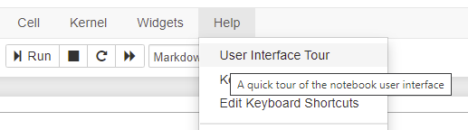
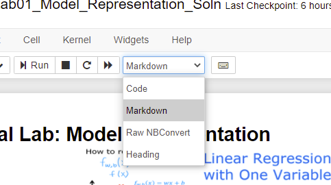
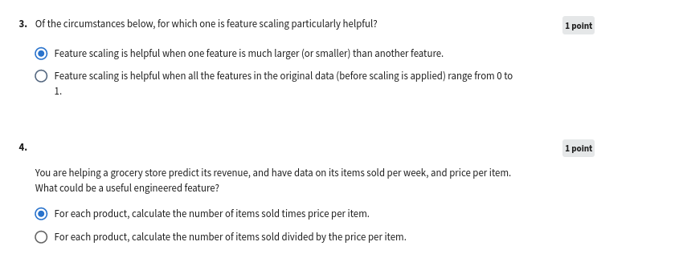
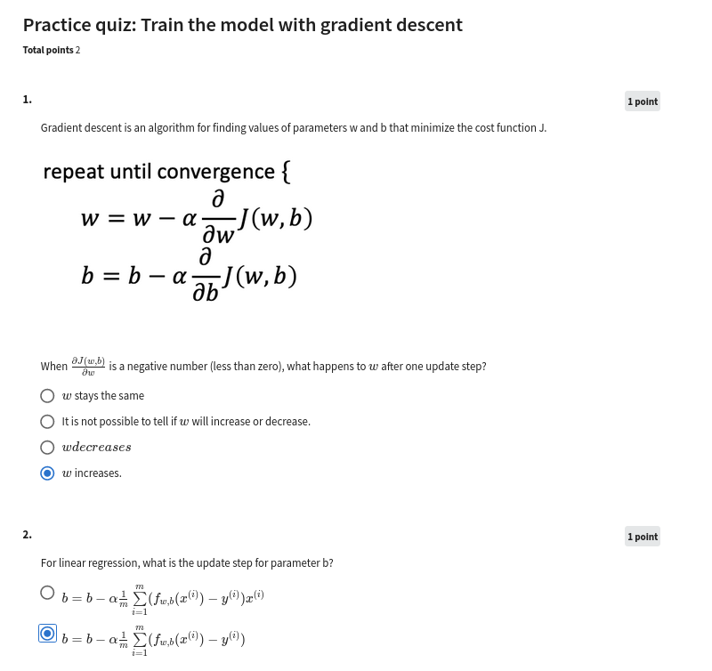
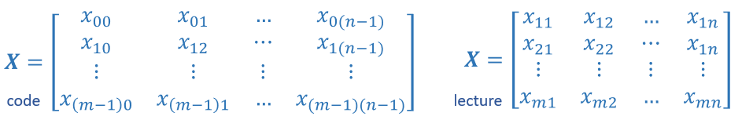
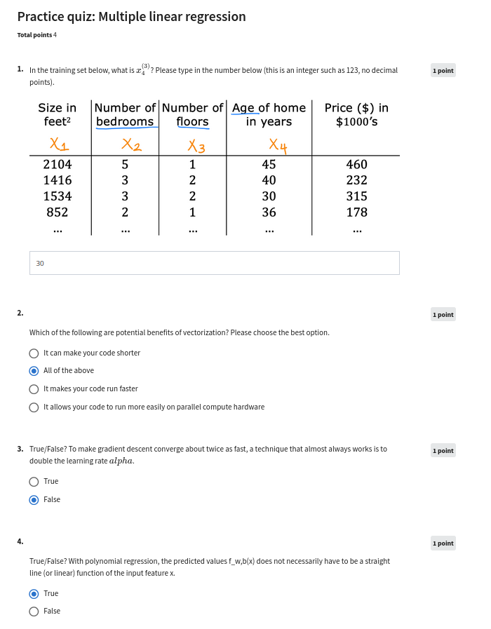
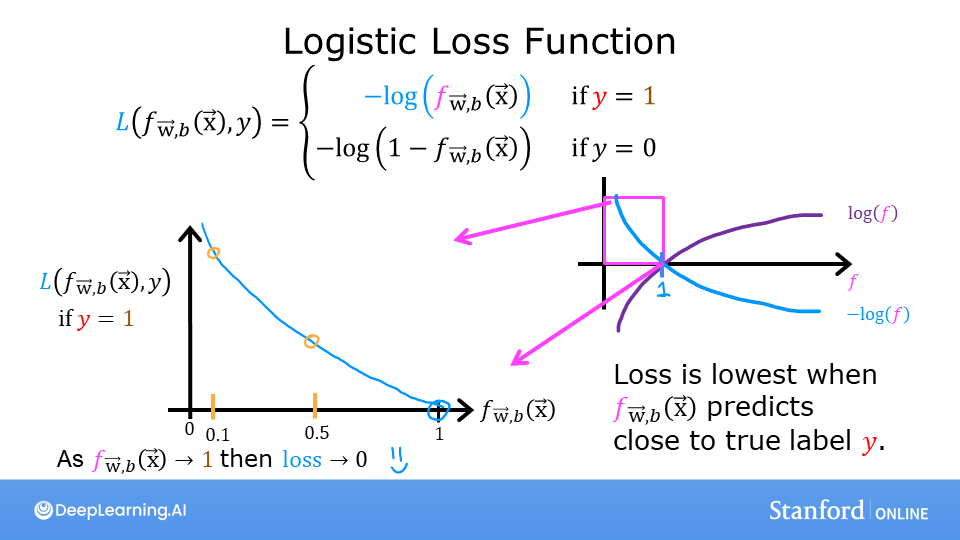
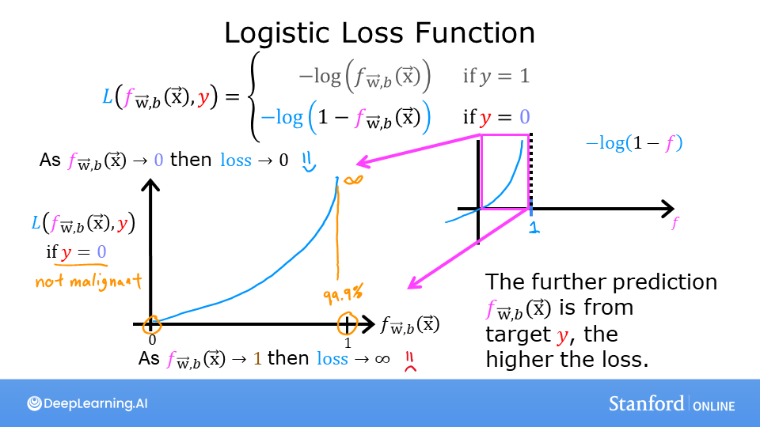
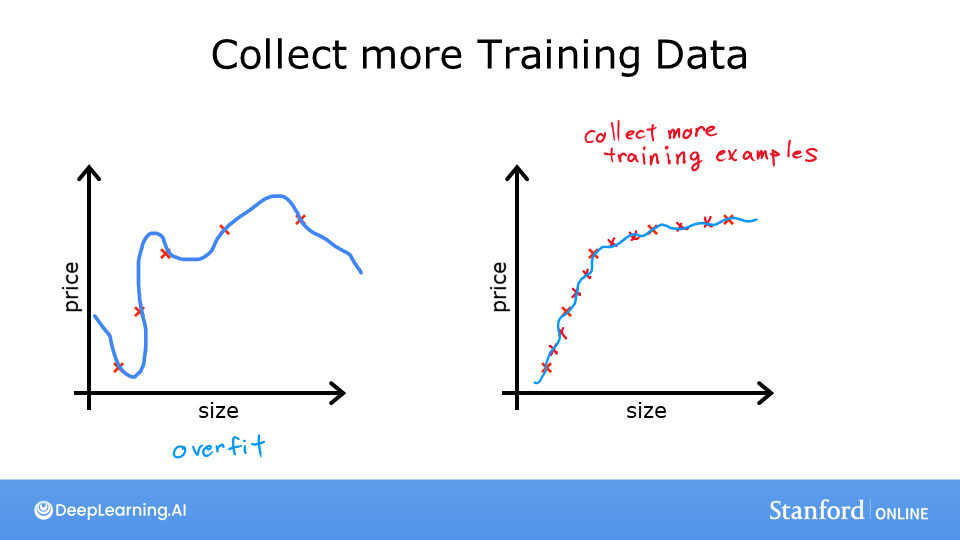

Supervised_Machine_Learning
(Regression_and_Classification)
Module - 1
[ ]:
#ignore these lines, these are added to load some data
import sys
sys.path.append("/home/amitk/my_web/Machine-Learning-Andrew-Ng/source/source_files/Supervised_Machine_Learning_Regression_and_Classification")
sys.path.append("/home/amitk/my_web/Machine-Learning-Andrew-Ng/source/source_files/Supervised_Machine_Learning_Regression_and_Classification/week1")
sys.path.append("/home/amitk/my_web/Machine-Learning-Andrew-Ng/source/source_files/Supervised_Machine_Learning_Regression_and_Classification/week2")
sys.path.append("/home/amitk/my_web/Machine-Learning-Andrew-Ng/source/source_files/Supervised_Machine_Learning_Regression_and_Classification/week3")
sys.path.append("/home/amitk/my_web/Machine-Learning-Andrew-Ng/source/source_files/Supervised_Machine_Learning_Regression_and_Classification/week2/C1W2A1")
sys.path.append("/home/amitk/my_web/Machine-Learning-Andrew-Ng/source/source_files/Supervised_Machine_Learning_Regression_and_Classification/week3/OptionalLabs")
sys.path.append("/home/amitk/my_web/Machine-Learning-Andrew-Ng/source/source_files/Supervised_Machine_Learning_Regression_and_Classification/week3/C1W3A1")
Optional Lab - W1: Brief Introduction to Python and Jupyter Notebooks
Welcome to the first optional lab! Optional labs are available to: - provide information - like this notebook - reinforce lecture material with hands-on examples - provide working examples of routines used in the graded labs
Goals
In this lab, you will: - Get a brief introduction to Jupyter notebooks - Take a tour of Jupyter notebooks - Learn the difference between markdown cells and code cells - Practice some basic python
The easiest way to become familiar with Jupyter notebooks is to take the tour available above in the Help menu:

Jupyter notebooks have two types of cells that are used in this course. Cells such as this which contain documentation called Markdown Cells. The name is derived from the simple formatting language used in the cells. You will not be required to produce markdown cells. Its useful to understand the cell pulldown shown in graphic below. Occasionally, a cell will end up in the wrong mode and you may need to restore it to the right state:

The other type of cell is the code cell where you will write your code:
[96]:
#This is a 'Code' Cell
print("This is code cell")
This is code cell
Python
You can write your code in the code cells. To run the code, select the cell and either - hold the shift-key down and hit ‘enter’ or ‘return’ - click the ‘run’ arrow above
Print statement
[97]:
# print statements
variable = "right in the strings!"
print(f"f strings allow you to embed variables {variable}")
f strings allow you to embed variables right in the strings!
Practice Quiz
Quiz - 1

Quiz - 2

Quiz - 3

Module - 2
Optional Lab W2: Python, NumPy and Vectorization
A brief introduction to some of the scientific computing used in this course. In particular the NumPy scientific computing package and its use with python.
Outline
1.1 Goals
1.2 Useful References
2 Python and NumPy
3 Vectors
3.1 Abstract
3.2 NumPy Arrays
3.3 Vector Creation
3.4 Operations on Vectors
4 Matrices
4.1 Abstract
4.2 NumPy Arrays
4.3 Matrix Creation
4.4 Operations on Matrices
[98]:
import numpy as np # it is an unofficial standard to use np for numpy
import time
1.1 Goals
In this lab, you will: - Review the features of NumPy and Python that are used in Course 1
1.2 Useful References
NumPy Documentation including a basic introduction: NumPy.org - A challenging feature topic: NumPy Broadcasting
2 Python and NumPy
Python is the programming language we will be using in this course. It has a set of numeric data types and arithmetic operations. NumPy is a library that extends the base capabilities of python to add a richer data set including more numeric types, vectors, matrices, and many matrix functions. NumPy and python work together fairly seamlessly. Python arithmetic operators work on NumPy data types and many NumPy functions will accept python data types.
3 Vectors
3.1 Abstract

Vectors, as you will use them in this course, are ordered arrays of numbers. In notation, vectors are denoted with lower case bold letters such as \(\mathbf{x}\). The elements of a vector are all the same type. A vector does not, for example, contain both characters and numbers. The number of elements in the array is often referred to as the dimension though mathematicians may prefer rank. The vector shown has a dimension of \(n\). The elements of a vector can be referenced with an index. In math settings, indexes typically run from 1 to n. In computer science and these labs, indexing will typically run from 0 to n-1. In notation, elements of a vector, when referenced individually will indicate the index in a subscript, for example, the \(0^{th}\) element, of the vector \(\mathbf{x}\) is \(x_0\). Note, the x is not bold in this case.
3.2 NumPy Arrays
NumPy’s basic data structure is an indexable, n-dimensional array containing elements of the same type (dtype). Right away, you may notice we have overloaded the term ‘dimension’. Above, it was the number of elements in the vector, here, dimension refers to the number of indexes of an array. A one-dimensional or 1-D array has one index. In Course 1, we will represent vectors as NumPy 1-D arrays.
1-D array, shape (n,): n elements indexed [0] through [n-1]
3.3 Vector Creation
Data creation routines in NumPy will generally have a first parameter which is the shape of the object. This can either be a single value for a 1-D result or a tuple (n,m,…) specifying the shape of the result. Below are examples of creating vectors using these routines.
[99]:
# NumPy routines which allocate memory and fill arrays with value
a = np.zeros(4); print(f"np.zeros(4) : a = {a}, a shape = {a.shape}, a data type = {a.dtype}")
a = np.zeros((4,)); print(f"np.zeros(4,) : a = {a}, a shape = {a.shape}, a data type = {a.dtype}")
a = np.random.random_sample(4); print(f"np.random.random_sample(4): a = {a}, a shape = {a.shape}, a data type = {a.dtype}")
np.zeros(4) : a = [0. 0. 0. 0.], a shape = (4,), a data type = float64
np.zeros(4,) : a = [0. 0. 0. 0.], a shape = (4,), a data type = float64
np.random.random_sample(4): a = [0.08756251 0.03058948 0.35713493 0.58978199], a shape = (4,), a data type = float64
Some data creation routines do not take a shape tuple:
[100]:
# NumPy routines which allocate memory and fill arrays with value but do not accept shape as input argument
a = np.arange(4.); print(f"np.arange(4.): a = {a}, a shape = {a.shape}, a data type = {a.dtype}")
a = np.random.rand(4); print(f"np.random.rand(4): a = {a}, a shape = {a.shape}, a data type = {a.dtype}")
np.arange(4.): a = [0. 1. 2. 3.], a shape = (4,), a data type = float64
np.random.rand(4): a = [0.05222273 0.06566367 0.04350119 0.39515076], a shape = (4,), a data type = float64
values can be specified manually as well.
[101]:
# NumPy routines which allocate memory and fill with user specified values
a = np.array([5,4,3,2]); print(f"np.array([5,4,3,2]): a = {a}, a shape = {a.shape}, a data type = {a.dtype}")
a = np.array([5.,4,3,2]); print(f"np.array([5.,4,3,2]): a = {a}, a shape = {a.shape}, a data type = {a.dtype}")
np.array([5,4,3,2]): a = [5 4 3 2], a shape = (4,), a data type = int64
np.array([5.,4,3,2]): a = [5. 4. 3. 2.], a shape = (4,), a data type = float64
These have all created a one-dimensional vector a with four elements. a.shape returns the dimensions. Here we see a.shape = (4,) indicating a 1-d array with 4 elements.
3.4 Operations on Vectors
Let’s explore some operations using vectors.
3.4.1 Indexing
a[2].[102]:
#vector indexing operations on 1-D vectors
a = np.arange(10)
print(a)
#access an element
print(f"a[2].shape: {a[2].shape} a[2] = {a[2]}, Accessing an element returns a scalar")
# access the last element, negative indexes count from the end
print(f"a[-1] = {a[-1]}")
#indexs must be within the range of the vector or they will produce and error
try:
c = a[10]
except Exception as e:
print("The error message you'll see is:")
print(e)
[0 1 2 3 4 5 6 7 8 9]
a[2].shape: () a[2] = 2, Accessing an element returns a scalar
a[-1] = 9
The error message you'll see is:
index 10 is out of bounds for axis 0 with size 10
3.4.2 Slicing
Slicing creates an array of indices using a set of three values (start:stop:step). A subset of values is also valid. Its use is best explained by example:
[103]:
#vector slicing operations
a = np.arange(10)
print(f"a = {a}")
#access 5 consecutive elements (start:stop:step)
c = a[2:7:1]; print("a[2:7:1] = ", c)
# access 3 elements separated by two
c = a[2:7:2]; print("a[2:7:2] = ", c)
# access all elements index 3 and above
c = a[3:]; print("a[3:] = ", c)
# access all elements below index 3
c = a[:3]; print("a[:3] = ", c)
# access all elements
c = a[:]; print("a[:] = ", c)
a = [0 1 2 3 4 5 6 7 8 9]
a[2:7:1] = [2 3 4 5 6]
a[2:7:2] = [2 4 6]
a[3:] = [3 4 5 6 7 8 9]
a[:3] = [0 1 2]
a[:] = [0 1 2 3 4 5 6 7 8 9]
3.4.3 Single vector operations
There are a number of useful operations that involve operations on a single vector.
[104]:
a = np.array([1,2,3,4])
print(f"a : {a}")
# negate elements of a
b = -a
print(f"b = -a : {b}")
# sum all elements of a, returns a scalar
b = np.sum(a)
print(f"b = np.sum(a) : {b}")
b = np.mean(a)
print(f"b = np.mean(a): {b}")
b = a**2
print(f"b = a**2 : {b}")
a : [1 2 3 4]
b = -a : [-1 -2 -3 -4]
b = np.sum(a) : 10
b = np.mean(a): 2.5
b = a**2 : [ 1 4 9 16]
3.4.4 Vector Vector element-wise operations
Most of the NumPy arithmetic, logical and comparison operations apply to vectors as well. These operators work on an element-by-element basis. For example
[105]:
a = np.array([ 1, 2, 3, 4])
b = np.array([-1,-2, 3, 4])
print(f"Binary operators work element wise: {a + b}")
Binary operators work element wise: [0 0 6 8]
Of course, for this to work correctly, the vectors must be of the same size:
[106]:
#try a mismatched vector operation
c = np.array([1, 2])
try:
d = a + c
except Exception as e:
print("The error message you'll see is:")
print(e)
The error message you'll see is:
operands could not be broadcast together with shapes (4,) (2,)
3.4.5 Scalar Vector operations
Vectors can be ‘scaled’ by scalar values. A scalar value is just a number. The scalar multiplies all the elements of the vector.
[107]:
a = np.array([1, 2, 3, 4])
# multiply a by a scalar
b = 5 * a
print(f"b = 5 * a : {b}")
b = 5 * a : [ 5 10 15 20]
3.4.6 Vector Vector dot product
The dot product is a mainstay of Linear Algebra and NumPy. This is an operation used extensively in this course and should be well understood. The dot product is shown below.

The dot product multiplies the values in two vectors element-wise and then sums the result. Vector dot product requires the dimensions of the two vectors to be the same.
Let’s implement our own version of the dot product below:
Using a for loop, implement a function which returns the dot product of two vectors. The function to return given inputs \(a\) and \(b\):
Assume both a and b are the same shape.
[108]:
def my_dot(a, b):
"""
Compute the dot product of two vectors
Args:
a (ndarray (n,)): input vector
b (ndarray (n,)): input vector with same dimension as a
Returns:
x (scalar):
"""
x=0
for i in range(a.shape[0]):
x = x + a[i] * b[i]
return x
[109]:
# test 1-D
a = np.array([1, 2, 3, 4])
b = np.array([-1, 4, 3, 2])
print(f"my_dot(a, b) = {my_dot(a, b)}")
my_dot(a, b) = 24
Note, the dot product is expected to return a scalar value.
Let’s try the same operations using np.dot.
[110]:
# test 1-D
a = np.array([1, 2, 3, 4])
b = np.array([-1, 4, 3, 2])
c = np.dot(a, b)
print(f"NumPy 1-D np.dot(a, b) = {c}, np.dot(a, b).shape = {c.shape} ")
c = np.dot(b, a)
print(f"NumPy 1-D np.dot(b, a) = {c}, np.dot(a, b).shape = {c.shape} ")
NumPy 1-D np.dot(a, b) = 24, np.dot(a, b).shape = ()
NumPy 1-D np.dot(b, a) = 24, np.dot(a, b).shape = ()
Above, you will note that the results for 1-D matched our implementation.
3.4.7 The Need for Speed: vector vs for loop
We utilized the NumPy library because it improves speed memory efficiency. Let’s demonstrate:
[111]:
np.random.seed(1)
a = np.random.rand(10000000) # very large arrays
b = np.random.rand(10000000)
tic = time.time() # capture start time
c = np.dot(a, b)
toc = time.time() # capture end time
print(f"np.dot(a, b) = {c:.4f}")
print(f"Vectorized version duration: {1000*(toc-tic):.4f} ms ")
tic = time.time() # capture start time
c = my_dot(a,b)
toc = time.time() # capture end time
print(f"my_dot(a, b) = {c:.4f}")
print(f"loop version duration: {1000*(toc-tic):.4f} ms ")
del(a);del(b) #remove these big arrays from memory
np.dot(a, b) = 2501072.5817
Vectorized version duration: 10.0081 ms
my_dot(a, b) = 2501072.5817
loop version duration: 2157.2831 ms
So, vectorization provides a large speed up in this example. This is because NumPy makes better use of available data parallelism in the underlying hardware. GPU’s and modern CPU’s implement Single Instruction, Multiple Data (SIMD) pipelines allowing multiple operations to be issued in parallel. This is critical in Machine Learning where the data sets are often very large.
3.4.8 Vector Vector operations in Course 1
Vector Vector operations will appear frequently in course 1. Here is why: - Going forward, our examples will be stored in an array, X_train of dimension (m,n). This will be explained more in context, but here it is important to note it is a 2 Dimensional array or matrix (see next section on matrices). - w will be a 1-dimensional vector of shape (n,). - we will perform operations by looping through the examples, extracting each example to work on individually by indexing X. For
example:X[i] - X[i] returns a value of shape (n,), a 1-dimensional vector. Consequently, operations involving X[i] are often vector-vector.
That is a somewhat lengthy explanation, but aligning and understanding the shapes of your operands is important when performing vector operations.
[112]:
# show common Course 1 example
X = np.array([[1],[2],[3],[4]])
w = np.array([2])
c = np.dot(X[1], w)
print(f"X[1] has shape {X[1].shape}")
print(f"w has shape {w.shape}")
print(f"c has shape {c.shape}")
X[1] has shape (1,)
w has shape (1,)
c has shape ()
4 Matrices
4.1 Abstract
Matrices, are two dimensional arrays. The elements of a matrix are all of the same type. In notation, matrices are denoted with capitol, bold letter such as \(\mathbf{X}\). In this and other labs, m is often the number of rows and n the number of columns. The elements of a matrix can be referenced with a two dimensional index. In math settings, numbers in the index typically run from 1 to n. In computer science and these labs, indexing will run from 0 to n-1.

Generic Matrix Notation, 1st index is row, 2nd is column
4.2 NumPy Arrays
NumPy’s basic data structure is an indexable, n-dimensional array containing elements of the same type (dtype). These were described earlier. Matrices have a two-dimensional (2-D) index [m,n].
In Course 1, 2-D matrices are used to hold training data. Training data is \(m\) examples by \(n\) features creating an (m,n) array. Course 1 does not do operations directly on matrices but typically extracts an example as a vector and operates on that. Below you will review: - data creation - slicing and indexing
4.3 Matrix Creation
The same functions that created 1-D vectors will create 2-D or n-D arrays. Here are some examples
Below, the shape tuple is provided to achieve a 2-D result. Notice how NumPy uses brackets to denote each dimension. Notice further than NumPy, when printing, will print one row per line.
[113]:
a = np.zeros((1, 5))
print(f"a shape = {a.shape}, a = {a}")
a = np.zeros((2, 1))
print(f"a shape = {a.shape}, a = {a}")
a = np.random.random_sample((1, 1))
print(f"a shape = {a.shape}, a = {a}")
a shape = (1, 5), a = [[0. 0. 0. 0. 0.]]
a shape = (2, 1), a = [[0.]
[0.]]
a shape = (1, 1), a = [[0.44236513]]
One can also manually specify data. Dimensions are specified with additional brackets matching the format in the printing above.
[114]:
# NumPy routines which allocate memory and fill with user specified values
a = np.array([[5], [4], [3]]); print(f" a shape = {a.shape}, np.array: a = {a}")
a = np.array([[5], # One can also
[4], # separate values
[3]]); #into separate rows
print(f" a shape = {a.shape}, np.array: a = {a}")
a shape = (3, 1), np.array: a = [[5]
[4]
[3]]
a shape = (3, 1), np.array: a = [[5]
[4]
[3]]
4.4 Operations on Matrices
Let’s explore some operations using matrices.
4.4.1 Indexing
Matrices include a second index. The two indexes describe [row, column]. Access can either return an element or a row/column. See below:
[115]:
#vector indexing operations on matrices
a = np.arange(6).reshape(-1, 2) #reshape is a convenient way to create matrices
print(f"a.shape: {a.shape}, \na= {a}")
#access an element
print(f"\na[2,0].shape: {a[2, 0].shape}, a[2,0] = {a[2, 0]}, type(a[2,0]) = {type(a[2, 0])} Accessing an element returns a scalar\n")
#access a row
print(f"a[2].shape: {a[2].shape}, a[2] = {a[2]}, type(a[2]) = {type(a[2])}")
a.shape: (3, 2),
a= [[0 1]
[2 3]
[4 5]]
a[2,0].shape: (), a[2,0] = 4, type(a[2,0]) = <class 'numpy.int64'> Accessing an element returns a scalar
a[2].shape: (2,), a[2] = [4 5], type(a[2]) = <class 'numpy.ndarray'>
It is worth drawing attention to the last example. Accessing a matrix by just specifying the row will return a 1-D vector.
a = np.arange(6).reshape(-1, 2)a = np.arange(6).reshape(3, 2)4.4.2 Slicing
Slicing creates an array of indices using a set of three values (start:stop:step). A subset of values is also valid. Its use is best explained by example:
[116]:
#vector 2-D slicing operations
a = np.arange(20).reshape(-1, 10)
print(f"a = \n{a}")
#access 5 consecutive elements (start:stop:step)
print("a[0, 2:7:1] = ", a[0, 2:7:1], ", a[0, 2:7:1].shape =", a[0, 2:7:1].shape, "a 1-D array")
#access 5 consecutive elements (start:stop:step) in two rows
print("a[:, 2:7:1] = \n", a[:, 2:7:1], ", a[:, 2:7:1].shape =", a[:, 2:7:1].shape, "a 2-D array")
# access all elements
print("a[:,:] = \n", a[:,:], ", a[:,:].shape =", a[:,:].shape)
# access all elements in one row (very common usage)
print("a[1,:] = ", a[1,:], ", a[1,:].shape =", a[1,:].shape, "a 1-D array")
# same as
print("a[1] = ", a[1], ", a[1].shape =", a[1].shape, "a 1-D array")
a =
[[ 0 1 2 3 4 5 6 7 8 9]
[10 11 12 13 14 15 16 17 18 19]]
a[0, 2:7:1] = [2 3 4 5 6] , a[0, 2:7:1].shape = (5,) a 1-D array
a[:, 2:7:1] =
[[ 2 3 4 5 6]
[12 13 14 15 16]] , a[:, 2:7:1].shape = (2, 5) a 2-D array
a[:,:] =
[[ 0 1 2 3 4 5 6 7 8 9]
[10 11 12 13 14 15 16 17 18 19]] , a[:,:].shape = (2, 10)
a[1,:] = [10 11 12 13 14 15 16 17 18 19] , a[1,:].shape = (10,) a 1-D array
a[1] = [10 11 12 13 14 15 16 17 18 19] , a[1].shape = (10,) a 1-D array
Practice Quiz
Quiz-1

Quiz-2

Quiz-3

Assignment W2:
Practice Lab: Linear Regression
Welcome to your first practice lab! In this lab, you will implement linear regression with one variable to predict profits for a restaurant franchise.
Outline
1 - Packages
2 - Linear regression with one variable
2.1 Problem Statement
3 Dataset
4 Refresher on linear regression
5 Compute Cost
Exercise 1
6 Gradient descent
Exercise 2
6.1 Learning parameters using batch gradient descent
1 - Packages
First, let’s run the cell below to import all the packages that you will need during this assignment. - numpy is the fundamental package for working with matrices in Python. - matplotlib is a famous library to plot graphs in Python. - utils.py contains helper functions for this assignment. You do not need to modify code in this file.
[11]:
import sys
#add modules from the path
sys.path.append("/home/amitk/my_web/Machine-Learning-Andrew-Ng/source/source_files/Supervised_Machine_Learning_Regression_and_Classification/week2/C1W2A1")
import numpy as np
import matplotlib.pyplot as plt
from utils import *
import copy
import math
%matplotlib inline
#to show graphs inline
2 - Problem Statement
Suppose you are the CEO of a restaurant franchise and are considering different cities for opening a new outlet. - You would like to expand your business to cities that may give your restaurant higher profits. - The chain already has restaurants in various cities and you have data for profits and populations from the cities. - You also have data on cities that are candidates for a new restaurant. - For these cities, you have the city population.
Can you use the data to help you identify which cities may potentially give your business higher profits?
3 - Dataset
load_data() function shown below loads the data into variables x_train and y_train - x_train is the population of a city - y_train is the profit of a restaurant in that city. A negative value for profit indicates a loss.X_train and y_train are numpy arrays.[10]:
# load the dataset
x_train, y_train = load_data()
View the variables
The code below prints the variable x_train and the type of the variable.
[119]:
# print x_train
print("Type of x_train:",type(x_train))
print("First five elements of x_train are:\n", x_train[:5])
Type of x_train: <class 'numpy.ndarray'>
First five elements of x_train are:
[6.1101 5.5277 8.5186 7.0032 5.8598]
x_train is a numpy array that contains decimal values that are all greater than zero. - These values represent the city population times 10,000 - For example, 6.1101 means that the population for that city is 61,101
Now, let’s print y_train
[120]:
# print y_train
print("Type of y_train:",type(y_train))
print("First five elements of y_train are:\n", y_train[:5])
Type of y_train: <class 'numpy.ndarray'>
First five elements of y_train are:
[17.592 9.1302 13.662 11.854 6.8233]
Similarly, y_train is a numpy array that has decimal values, some negative, some positive. - These represent your restaurant’s average monthly profits in each city, in units of $10,000. - For example, 17.592 represents $175,920 in average monthly profits for that city. - -2.6807 represents -$26,807 in average monthly loss for that city.
Check the dimensions of your variables
Another useful way to get familiar with your data is to view its dimensions.
Please print the shape of x_train and y_train and see how many training examples you have in your dataset.
[121]:
print ('The shape of x_train is:', x_train.shape)
print ('The shape of y_train is: ', y_train.shape)
print ('Number of training examples (m):', len(x_train))
The shape of x_train is: (97,)
The shape of y_train is: (97,)
Number of training examples (m): 97
The city population array has 97 data points, and the monthly average profits also has 97 data points. These are NumPy 1D arrays.
Visualize your data
It is often useful to understand the data by visualizing it. - For this dataset, you can use a scatter plot to visualize the data, since it has only two properties to plot (profit and population). - Many other problems that you will encounter in real life have more than two properties (for example, population, average household income, monthly profits, monthly sales).When you have more than two properties, you can still use a scatter plot to see the relationship between each pair of properties.
[10]:
# Create a scatter plot of the data. To change the markers to red "x",
# we used the 'marker' and 'c' parameters
plt.scatter(x_train, y_train, marker='x', c='r')
# Set the title
plt.title("Profits vs. Population per city")
# Set the y-axis label
plt.ylabel('Profit in $10,000')
# Set the x-axis label
plt.xlabel('Population of City in 10,000s')
plt.show()

Your goal is to build a linear regression model to fit this data. - With this model, you can then input a new city’s population, and have the model estimate your restaurant’s potential monthly profits for that city.
4 - Refresher on linear regression
In this practice lab, you will fit the linear regression parameters \((w,b)\) to your dataset. - The model function for linear regression, which is a function that maps from x (city population) to y (your restaurant’s monthly profit for that city) is represented as
To train a linear regression model, you want to find the best \((w,b)\) parameters that fit your dataset.
To compare how one choice of \((w,b)\) is better or worse than another choice, you can evaluate it with a cost function \(J(w,b)\)
\(J\) is a function of \((w,b)\). That is, the value of the cost \(J(w,b)\) depends on the value of \((w,b)\).
The choice of \((w,b)\) that fits your data the best is the one that has the smallest cost \(J(w,b)\).
To find the values \((w,b)\) that gets the smallest possible cost \(J(w,b)\), you can use a method called gradient descent.
With each step of gradient descent, your parameters \((w,b)\) come closer to the optimal values that will achieve the lowest cost \(J(w,b)\).
The trained linear regression model can then take the input feature \(x\) (city population) and output a prediction \(f_{w,b}(x)\) (predicted monthly profit for a restaurant in that city).
5 - Compute Cost
Gradient descent involves repeated steps to adjust the value of your parameter \((w,b)\) to gradually get a smaller and smaller cost \(J(w,b)\). - At each step of gradient descent, it will be helpful for you to monitor your progress by computing the cost \(J(w,b)\) as \((w,b)\) gets updated. - In this section, you will implement a function to calculate \(J(w,b)\) so that you can check the progress of your gradient descent implementation.
Cost function
As you may recall from the lecture, for one variable, the cost function for linear regression \(J(w,b)\) is defined as
You can think of \(f_{w,b}(x^{(i)})\) as the model’s prediction of your restaurant’s profit, as opposed to \(y^{(i)}\), which is the actual profit that is recorded in the data.
\(m\) is the number of training examples in the dataset
Model prediction
For linear regression with one variable, the prediction of the model \(f_{w,b}\) for an example \(x^{(i)}\) is representented as:
This is the equation for a line, with an intercept \(b\) and a slope \(w\)
Implementation
Please complete the compute_cost() function below to compute the cost \(J(w,b)\).
Exercise 1
Complete the compute_cost below to:
Iterate over the training examples, and for each example, compute:
The prediction of the model for that example
\[f_{wb}(x^{(i)}) = wx^{(i)} + b\]The cost for that example
\[cost^{(i)} = (f_{wb} - y^{(i)})^2\]
Return the total cost over all examples
\[J(\mathbf{w},b) = \frac{1}{2m} \sum\limits_{i = 0}^{m-1} cost^{(i)}\]Here, \(m\) is the number of training examples and \(\sum\) is the summation operator
If you get stuck, you can check out the hints presented after the cell below to help you with the implementation.
[30]:
# UNQ_C1
# GRADED FUNCTION: compute_cost
def compute_cost(x, y, w, b):
"""
Computes the cost function for linear regression.
Args:
x (ndarray): Shape (m,) Input to the model (Population of cities)
y (ndarray): Shape (m,) Label (Actual profits for the cities)
w, b (scalar): Parameters of the model
Returns
total_cost (float): The cost of using w,b as the parameters for linear regression
to fit the data points in x and y
"""
# number of training examples
m = x.shape[0]
# You need to return this variable correctly
total_cost = 0
### START CODE HERE ###
cost=0
for i in range(m):
f_wb = w*x[i]+b
cost += (f_wb - y[i])**2
total_cost = cost/(2*m)
### END CODE HERE ###
return total_cost
Click for hints
You can represent a summation operator eg: \(h = \sum\limits_{i = 0}^{m-1} 2i\) in code as follows:
h = 0
for i in range(m):
h = h + 2*i
In this case, you can iterate over all the examples in
xusing a for loop and add thecostfrom each iteration to a variable (cost_sum) initialized outside the loop.Then, you can return the
total_costascost_sumdivided by2m.
Click for more hints
Here’s how you can structure the overall implementation for this function
def compute_cost(x, y, w, b): # number of training examples m = x.shape[0] # You need to return this variable correctly total_cost = 0 ### START CODE HERE ### # Variable to keep track of sum of cost from each example cost_sum = 0 # Loop over training examples for i in range(m): # Your code here to get the prediction f_wb for the ith example f_wb = # Your code here to get the cost associated with the ith example cost = # Add to sum of cost for each example cost_sum = cost_sum + cost # Get the total cost as the sum divided by (2*m) total_cost = (1 / (2 * m)) * cost_sum ### END CODE HERE ### return total_cost
If you’re still stuck, you can check the hints presented below to figure out how to calculate
f_wbandcost.
Hint to calculate f_wb For scalars \(a\), \(b\) and \(c\) (x[i], w and b are all scalars), you can calculate the equation \(h = ab + c\) in code as h = a * b + c
More hints to calculate f You can compute f_wb as f_wb = w * x[i] + b
Hint to calculate cost You can calculate the square of a variable z as z**2
More hints to calculate cost You can compute cost as cost = (f_wb - y[i]) ** 2
You can check if your implementation was correct by running the following test code:
[31]:
# Compute cost with some initial values for paramaters w, b
initial_w = 2
initial_b = 1
cost = compute_cost(x_train, y_train, initial_w, initial_b)
print(type(cost))
print(f'Cost at initial w (zeros): {cost:.3f}')
# Public tests
from public_tests import *
compute_cost_test(compute_cost)
<class 'numpy.float64'>
Cost at initial w (zeros): 75.203
All tests passed!
Expected Output:
Cost at initial w (zeros): 75.203 |
6 - Gradient descent
In this section, you will implement the gradient for parameters \(w, b\) for linear regression.
As described in the lecture videos, the gradient descent algorithm is:
\[\frac{\partial J(w,b)}{\partial b} = \frac{1}{m} \sum\limits_{i = 0}^{m-1} (f_{w,b}(x^{(i)}) - y^{(i)}) \tag{2}\]\[\frac{\partial J(w,b)}{\partial w} = \frac{1}{m} \sum\limits_{i = 0}^{m-1} (f_{w,b}(x^{(i)}) -y^{(i)})x^{(i)} \tag{3}\]* m is the number of training examples in the dataset
\(f_{w,b}(x^{(i)})\) is the model’s prediction, while \(y^{(i)}\), is the target value
You will implement a function called compute_gradient which calculates \(\frac{\partial J(w)}{\partial w}\), \(\frac{\partial J(w)}{\partial b}\)
Exercise 2
Please complete the compute_gradient function to:
Iterate over the training examples, and for each example, compute:
The prediction of the model for that example
\[f_{wb}(x^{(i)}) = wx^{(i)} + b\]The gradient for the parameters \(w, b\) from that example
\[\frac{\partial J(w,b)}{\partial b}^{(i)} = (f_{w,b}(x^{(i)}) - y^{(i)})\]\[\frac{\partial J(w,b)}{\partial w}^{(i)} = (f_{w,b}(x^{(i)}) -y^{(i)})x^{(i)}\]
Return the total gradient update from all the examples
\[\frac{\partial J(w,b)}{\partial b} = \frac{1}{m} \sum\limits_{i = 0}^{m-1} \frac{\partial J(w,b)}{\partial b}^{(i)}\]\[\frac{\partial J(w,b)}{\partial w} = \frac{1}{m} \sum\limits_{i = 0}^{m-1} \frac{\partial J(w,b)}{\partial w}^{(i)}\]Here, \(m\) is the number of training examples and \(\sum\) is the summation operator
If you get stuck, you can check out the hints presented after the cell below to help you with the implementation.
[32]:
# UNQ_C2
# GRADED FUNCTION: compute_gradient
def compute_gradient(x, y, w, b):
"""
Computes the gradient for linear regression
Args:
x (ndarray): Shape (m,) Input to the model (Population of cities)
y (ndarray): Shape (m,) Label (Actual profits for the cities)
w, b (scalar): Parameters of the model
Returns
dj_dw (scalar): The gradient of the cost w.r.t. the parameters w
dj_db (scalar): The gradient of the cost w.r.t. the parameter b
"""
# Number of training examples
m = x.shape[0]
# You need to return the following variables correctly
dj_dw = 0
dj_db = 0
### START CODE HERE ###
for i in range(m):
f_wb = w*x[i]+b
dj_db += f_wb - y[i]
dj_dw += (f_wb - y[i])*x[i]
dj_dw /= m
dj_db /= m
### END CODE HERE ###
return dj_dw, dj_db
Click for hints
You can represent a summation operator eg: \(h = \sum\limits_{i = 0}^{m-1} 2i\) in code as follows:
python h = 0 for i in range(m): h = h + 2*iIn this case, you can iterate over all the examples in
xusing a for loop and for each example, keep adding the gradient from that example to the variablesdj_dwanddj_dbwhich are initialized outside the loop.
- Then, you can return
dj_dwanddj_dbboth divided bym.Click for more hints
Here’s how you can structure the overall implementation for this function
def compute_gradient(x, y, w, b): """ Computes the gradient for linear regression Args: x (ndarray): Shape (m,) Input to the model (Population of cities) y (ndarray): Shape (m,) Label (Actual profits for the cities) w, b (scalar): Parameters of the model Returns dj_dw (scalar): The gradient of the cost w.r.t. the parameters w dj_db (scalar): The gradient of the cost w.r.t. the parameter b """ # Number of training examples m = x.shape[0] # You need to return the following variables correctly dj_dw = 0 dj_db = 0 ### START CODE HERE ### # Loop over examples for i in range(m): # Your code here to get prediction f_wb for the ith example f_wb = # Your code here to get the gradient for w from the ith example dj_dw_i = # Your code here to get the gradient for b from the ith example dj_db_i = # Update dj_db : In Python, a += 1 is the same as a = a + 1 dj_db += dj_db_i # Update dj_dw dj_dw += dj_dw_i # Divide both dj_dw and dj_db by m dj_dw = dj_dw / m dj_db = dj_db / m ### END CODE HERE ### return dj_dw, dj_db
If you’re still stuck, you can check the hints presented below to figure out how to calculate
f_wbandcost.Hint to calculate f_wb You did this in the previous exercise! For scalars \(a\), \(b\) and \(c\) (x[i], w and b are all scalars), you can calculate the equation \(h = ab + c\) in code as h = a * b + c
More hints to calculate f You can compute f_wb as f_wb = w * x[i] + b
Hint to calculate dj_dw_i For scalars \(a\), \(b\) and \(c\) (f_wb, y[i] and x[i] are all scalars), you can calculate the equation \(h = (a - b)c\) in code as h = (a-b)*c
More hints to calculate f You can compute dj_dw_i as dj_dw_i = (f_wb - y[i]) * x[i]
Hint to calculate dj_db_i You can compute dj_db_i as dj_db_i = f_wb - y[i]
Run the cells below to check your implementation of the compute_gradient function with two different initializations of the parameters \(w\),\(b\).
[33]:
# Compute and display gradient with w initialized to zeroes
initial_w = 0
initial_b = 0
tmp_dj_dw, tmp_dj_db = compute_gradient(x_train, y_train, initial_w, initial_b)
print('Gradient at initial w, b (zeros):', tmp_dj_dw, tmp_dj_db)
compute_gradient_test(compute_gradient)
Gradient at initial w, b (zeros): -65.32884974555672 -5.83913505154639
Using X with shape (4, 1)
All tests passed!
Now let’s run the gradient descent algorithm implemented above on our dataset.
Expected Output:
Gradient at initial , b (zeros) | -65.32884975 -5.83913505154639 |
[34]:
# Compute and display cost and gradient with non-zero w
test_w = 0.2
test_b = 0.2
tmp_dj_dw, tmp_dj_db = compute_gradient(x_train, y_train, test_w, test_b)
print('Gradient at test w, b:', tmp_dj_dw, tmp_dj_db)
Gradient at test w, b: -47.41610118114435 -4.007175051546391
Expected Output:
Gradient at test w | -47.41610118 -4.007175051546391 |
6.1 Learning parameters using batch gradient descent
You will now find the optimal parameters of a linear regression model by using batch gradient descent. Recall batch refers to running all the examples in one iteration. - You don’t need to implement anything for this part. Simply run the cells below.
A good way to verify that gradient descent is working correctly is to look at the value of \(J(w,b)\) and check that it is decreasing with each step.
Assuming you have implemented the gradient and computed the cost correctly and you have an appropriate value for the learning rate alpha, \(J(w,b)\) should never increase and should converge to a steady value by the end of the algorithm.
[35]:
def gradient_descent(x, y, w_in, b_in, cost_function, gradient_function, alpha, num_iters):
"""
Performs batch gradient descent to learn theta. Updates theta by taking
num_iters gradient steps with learning rate alpha
Args:
x : (ndarray): Shape (m,)
y : (ndarray): Shape (m,)
w_in, b_in : (scalar) Initial values of parameters of the model
cost_function: function to compute cost
gradient_function: function to compute the gradient
alpha : (float) Learning rate
num_iters : (int) number of iterations to run gradient descent
Returns
w : (ndarray): Shape (1,) Updated values of parameters of the model after
running gradient descent
b : (scalar) Updated value of parameter of the model after
running gradient descent
"""
# number of training examples
m = len(x)
# An array to store cost J and w's at each iteration — primarily for graphing later
J_history = []
w_history = []
w = copy.deepcopy(w_in) #avoid modifying global w within function
b = b_in
for i in range(num_iters):
# Calculate the gradient and update the parameters
dj_dw, dj_db = gradient_function(x, y, w, b )
# Update Parameters using w, b, alpha and gradient
w = w - alpha * dj_dw
b = b - alpha * dj_db
# Save cost J at each iteration
if i<100000: # prevent resource exhaustion
cost = cost_function(x, y, w, b)
J_history.append(cost)
# Print cost every at intervals 10 times or as many iterations if < 10
if i% math.ceil(num_iters/10) == 0:
w_history.append(w)
print(f"Iteration {i:4}: Cost {float(J_history[-1]):8.2f} ")
return w, b, J_history, w_history #return w and J,w history for graphing
Now let’s run the gradient descent algorithm above to learn the parameters for our dataset.
[49]:
# initialize fitting parameters. Recall that the shape of w is (n,)
initial_w = 20
initial_b = 5
# some gradient descent settings
iterations = 15000
alpha = 0.01
w,b,_,_ = gradient_descent(x_train ,y_train, initial_w, initial_b, compute_cost, compute_gradient, alpha, iterations)
print("w,b found by gradient descent:", w, b)
Iteration 0: Cost 508.01
Iteration 1500: Cost 4.50
Iteration 3000: Cost 4.48
Iteration 4500: Cost 4.48
Iteration 6000: Cost 4.48
Iteration 7500: Cost 4.48
Iteration 9000: Cost 4.48
Iteration 10500: Cost 4.48
Iteration 12000: Cost 4.48
Iteration 13500: Cost 4.48
w,b found by gradient descent: 1.193033644188364 -3.895780878299615
Expected Output:
w, b found by gradient descent | 1.16636235 -3.63029143940436 |
We will now use the final parameters from gradient descent to plot the linear fit.
Recall that we can get the prediction for a single example \(f(x^{(i)})= wx^{(i)}+b\).
To calculate the predictions on the entire dataset, we can loop through all the training examples and calculate the prediction for each example. This is shown in the code block below.
Assignment2: My solution
My Solution
#my solution: Dictate learning rate automatically,costrain parameter within boundry
import sys
#add modules from the path
sys.path.append("/home/amitk/my_web/Machine-Learning-Andrew-Ng/source/source_files/Supervised_Machine_Learning_Regression_and_Classification/week2/C1W2A1")
import numpy as np
import matplotlib.pyplot as plt
from utils import *
import copy
import math
%matplotlib inline
#to show graphs inline
# load the dataset
#x_train, y_train = load_data()
x_train=np.linspace(5,25,100)
y_train= 3*x_train-8 + np.random.normal(0,1,len(x_train))
def model(x,theta):
w,b=theta
return w*x+b
def dmodel_w(x,theta):
w,b=theta
return x
def dmodel_b(x,theta):
w,b=theta
return 1.
def cost(x,theta,y):
cf= ( model(x,theta) - y)**2
return np.sum(cf)/2/np.shape(x_train)[0]
def dcost_w(x,theta,y):
return np.sum((model(x,theta)-y)*dmodel_w(x,theta))/len(x)
def dcost_b(x,theta,y):
return np.sum((model(x,theta)-y)*dmodel_b(x,theta))/len(x)
def compute_gradient(x,theta,y):
return dcost_w(x,theta,y),dcost_b(x,theta,y)
np.set_printoptions(precision=2)
def gradient_decent(x,y,theta,alpha,niter):
w,b=theta
if theta[1]>0: #constraining parameters
b=-theta[1]
cost_i=np.zeros(niter)
for i in np.arange(niter):
if i>1:
if np.abs((cost_i[i]-cost_i[i-1])/cost_i[i])<0.05:
alpha/=2
dcw,dcb= compute_gradient(x,theta,y)
w = w-alpha*dcw
b = b-alpha*dcb
theta=w,b
cost_i[i]=cost(x,theta,y)
if i>1:
if cost_i[i]>cost_i[i-1]:
alpha/=2
#print(cost_i[i],alpha)
#print(theta)
return cost_i,theta
niter=10000
Win=20
Bin=5
alpha=0.5
theta_in=Win,Bin
grad_dec_result,theta_f=gradient_decent(x_train,y_train,theta_in,alpha,niter)
wf,bf=theta_f
print(wf,bf,grad_dec_result[-1])
#print(compute_gradient(x_train,y_train,0.2,0.2))
ax=plt.subplot(121)
plt.plot(np.arange(niter),grad_dec_result,".")
plt.yscale("log")
plt.xlabel("No of steps")
plt.ylabel("Cost function")
plt.ylim(bottom=0.01)
#plt.xlim(0,100)
#plt.show()
m = x_train.shape[0]
predictedamit = np.zeros(m)
for i in range(m):
predictedamit[i] = wf * x_train[i] + bf
ax=plt.subplot(122)
# Plot the linear fit
#plt.plot(x_train, predicted, c = "b")
plt.plot(x_train, predictedamit, c = "g",label="Predcited model")
# Create a scatter plot of the data.
plt.scatter(x_train, y_train, marker='x', c='r')
# Set the title
plt.title("Model fit")
# Set the y-axis label
plt.ylabel('training data')
# Set the x-axis label
plt.xlabel('training input')
plt.legend()
plt.tight_layout()
My Solution
import math
%matplotlib inline
plt.xlabel('Area of triangle')
See hints
import math
%matplotlib inline
plt.xlabel('Area of triangle')
Hint to calculate f_wb For scalars \(a\), \(b\) and \(c\) (x[i], w and b are all scalars), you can calculate the equation \(h = ab + c\) in code as h = a * b + c
More hints to calculate f You can compute f_wb as f_wb = w * x[i] + b
Hint to calculate cost You can calculate the square of a variable z as z**2
More hints to calculate cost You can compute cost as cost = (f_wb - y[i]) ** 2
[69]:
m = x_train.shape[0]
predicted = np.zeros(m)
for i in range(m):
predicted[i] = w * x_train[i] + b
We will now plot the predicted values to see the linear fit.
[72]:
# Plot the linear fit
plt.plot(x_train, predicted, c = "b")
#plt.plot(x_train, predictedamit, c = "g")
# Create a scatter plot of the data.
plt.scatter(x_train, y_train, marker='x', c='r')
# Set the title
plt.title("Profits vs. Population per city")
# Set the y-axis label
plt.ylabel('Profit in $10,000')
# Set the x-axis label
plt.xlabel('Population of City in 10,000s')
[72]:
Text(0.5, 0, 'Population of City in 10,000s')

Your final values of \(w,b\) can also be used to make predictions on profits. Let’s predict what the profit would be in areas of 35,000 and 70,000 people.
The model takes in population of a city in 10,000s as input.
Therefore, 35,000 people can be translated into an input to the model as
np.array([3.5])Similarly, 70,000 people can be translated into an input to the model as
np.array([7.])
[132]:
predict1 = 3.5 * w + b
print('For population = 35,000, we predict a profit of $%.2f' % (predict1*10000))
predict2 = 7.0 * w + b
print('For population = 70,000, we predict a profit of $%.2f' % (predict2*10000))
For population = 35,000, we predict a profit of $4519.77
For population = 70,000, we predict a profit of $45342.45
Expected Output:
For population = 35,000, we predict a profit of | $4519.77 |
For population = 70,000, we predict a profit of | $45342.45 |
Module - 3
Optional Lab W3
Optional Lab - 3.1: Classification
In this lab, you will contrast regression and classification.
[133]:
import matplotlib.pyplot as plt
plt.style.use('week3/OptionalLabs/deeplearning.mplstyle')
from lab_utils_common import dlc, plot_data
from plt_one_addpt_onclick import plt_one_addpt_onclick
Classification Problems
 Examples of classification problems are things like: identifying email as Spam or Not Spam or determining if a tumor is malignant or benign. In particular, these are examples of binary classification where there are two possible outcomes. Outcomes can be described in pairs of ‘positive’/’negative’ such as ‘yes’/’no, ‘true’/’false’ or ‘1’/’0’.
Examples of classification problems are things like: identifying email as Spam or Not Spam or determining if a tumor is malignant or benign. In particular, these are examples of binary classification where there are two possible outcomes. Outcomes can be described in pairs of ‘positive’/’negative’ such as ‘yes’/’no, ‘true’/’false’ or ‘1’/’0’.
Plots of classification data sets often use symbols to indicate the outcome of an example. In the plots below, ‘X’ is used to represent the positive values while ‘O’ represents negative outcomes.
[134]:
x_train = np.array([0., 1, 2, 3, 4, 5])
y_train = np.array([0, 0, 0, 1, 1, 1])
X_train2 = np.array([[0.5, 1.5], [1,1], [1.5, 0.5], [3, 0.5], [2, 2], [1, 2.5]])
y_train2 = np.array([0, 0, 0, 1, 1, 1])
[135]:
pos = y_train == 1
neg = y_train == 0
fig,ax = plt.subplots(1,2,figsize=(8,3))
#plot 1, single variable
ax[0].scatter(x_train[pos], y_train[pos], marker='x', s=80, c = 'red', label="y=1")
ax[0].scatter(x_train[neg], y_train[neg], marker='o', s=100, label="y=0", facecolors='none',
edgecolors=dlc["dlblue"],lw=3)
ax[0].set_ylim(-0.08,1.1)
ax[0].set_ylabel('y', fontsize=12)
ax[0].set_xlabel('x', fontsize=12)
ax[0].set_title('one variable plot')
ax[0].legend()
#plot 2, two variables
plot_data(X_train2, y_train2, ax[1])
ax[1].axis([0, 4, 0, 4])
ax[1].set_ylabel('$x_1$', fontsize=12)
ax[1].set_xlabel('$x_0$', fontsize=12)
ax[1].set_title('two variable plot')
ax[1].legend()
plt.tight_layout()
plt.show()

Note in the plots above: - In the single variable plot, positive results are shown both a red ‘X’s and as y=1. Negative results are blue ‘O’s and are located at y=0. - Recall in the case of linear regression, y would not have been limited to two values but could have been any value. - In the two-variable plot, the y axis is not available. Positive results are shown as red ‘X’s, while negative results use the blue ‘O’ symbol. - Recall in the case of linear regression with multiple variables, y would not have been limited to two values and a similar plot would have been three-dimensional.
Linear Regression approach
In the previous week, you applied linear regression to build a prediction model. Let’s try that approach here using the simple example that was described in the lecture. The model will predict if a tumor is benign or malignant based on tumor size. Try the following: - Click on ‘Run Linear Regression’ to find the best linear regression model for the given data. - Note the resulting linear model does not match the data well. One option to improve the results is to apply a threshold. - Tick the box on the ‘Toggle 0.5 threshold’ to show the predictions if a threshold is applied. - These predictions look good, the predictions match the data - Important: Now, add further ‘malignant’ data points on the far right, in the large tumor size range (near 10), and re-run linear regression. - Now, the model predicts the larger tumor, but data point at x=3 is being incorrectly predicted! - to clear/renew the plot, rerun the cell containing the plot command.
[136]:
w_in = np.zeros((1))
b_in = 0
plt.close('all')
addpt = plt_one_addpt_onclick( x_train,y_train, w_in, b_in, logistic=False)

The example above demonstrates that the linear model is insufficient to model categorical data. The model can be extended as described in the following lab.
In this lab you: - explored categorical data sets and plotting - determined that linear regression was insufficient for a classification problem.
Optional Lab - 3.2: Logistic Regression
In this ungraded lab, you will - explore the sigmoid function (also known as the logistic function) - explore logistic regression; which uses the sigmoid function
[4]:
import numpy as np
%matplotlib widget
import matplotlib.pyplot as plt
from plt_one_addpt_onclick import plt_one_addpt_onclick
from lab_utils_common import draw_vthresh
plt.style.use('week3/OptionalLabs/deeplearning.mplstyle')
Sigmoid or Logistic Function
|e04c3e9635dc44eda42b419a9fd5b907|As discussed in the lecture videos, for a classification task, we can start by using our linear regression model, \(f_{\mathbf{w},b}(\mathbf{x}^{(i)}) = \mathbf{w} \cdot \mathbf{x}^{(i)} + b\), to predict \(y\) given \(x\). - However, we would like the predictions of our classification model to be between 0 and 1 since our output variable \(y\) is either 0 or 1. - This can be accomplished by using a “sigmoid function” which maps all input values to values between 0 and 1.
Let’s implement the sigmoid function and see this for ourselves.
Formula for Sigmoid function
The formula for a sigmoid function is as follows -
\(g(z) = \frac{1}{1+e^{-z}}\tag{1}\)
In the case of logistic regression, z (the input to the sigmoid function), is the output of a linear regression model. - In the case of a single example, \(z\) is scalar. - in the case of multiple examples, \(z\) may be a vector consisting of \(m\) values, one for each example. - The implementation of the sigmoid function should cover both of these potential input formats. Let’s implement this in Python.
NumPy has a function called `exp() <https://numpy.org/doc/stable/reference/generated/numpy.exp.html>`__, which offers a convenient way to calculate the exponential ( \(e^{z}\)) of all elements in the input array (z).
It also works with a single number as an input, as shown below.
[5]:
# Input is an array.
input_array = np.array([1,2,3])
exp_array = np.exp(input_array)
print("Input to exp:", input_array)
print("Output of exp:", exp_array)
# Input is a single number
input_val = 1
exp_val = np.exp(input_val)
print("Input to exp:", input_val)
print("Output of exp:", exp_val)
Input to exp: [1 2 3]
Output of exp: [ 2.72 7.39 20.09]
Input to exp: 1
Output of exp: 2.718281828459045
The sigmoid function is implemented in python as shown in the cell below.
[6]:
def sigmoid(z):
"""
Compute the sigmoid of z
Args:
z (ndarray): A scalar, numpy array of any size.
Returns:
g (ndarray): sigmoid(z), with the same shape as z
"""
g = 1/(1+np.exp(-z))
return g
Let’s see what the output of this function is for various value of z
[7]:
# Generate an array of evenly spaced values between -10 and 10
z_tmp = np.arange(-10,11)
# Use the function implemented above to get the sigmoid values
y = sigmoid(z_tmp)
# Code for pretty printing the two arrays next to each other
np.set_printoptions(precision=3)
print("Input (z), Output (sigmoid(z))")
print(np.c_[z_tmp, y])
Input (z), Output (sigmoid(z))
[[-1.000e+01 4.540e-05]
[-9.000e+00 1.234e-04]
[-8.000e+00 3.354e-04]
[-7.000e+00 9.111e-04]
[-6.000e+00 2.473e-03]
[-5.000e+00 6.693e-03]
[-4.000e+00 1.799e-02]
[-3.000e+00 4.743e-02]
[-2.000e+00 1.192e-01]
[-1.000e+00 2.689e-01]
[ 0.000e+00 5.000e-01]
[ 1.000e+00 7.311e-01]
[ 2.000e+00 8.808e-01]
[ 3.000e+00 9.526e-01]
[ 4.000e+00 9.820e-01]
[ 5.000e+00 9.933e-01]
[ 6.000e+00 9.975e-01]
[ 7.000e+00 9.991e-01]
[ 8.000e+00 9.997e-01]
[ 9.000e+00 9.999e-01]
[ 1.000e+01 1.000e+00]]
The values in the left column are z, and the values in the right column are sigmoid(z). As you can see, the input values to the sigmoid range from -10 to 10, and the output values range from 0 to 1.
Now, let’s try to plot this function using the matplotlib library.
[8]:
# Plot z vs sigmoid(z)
fig,ax = plt.subplots(1,1,figsize=(5,3))
ax.plot(z_tmp, y, c="b")
ax.set_title("Sigmoid function")
ax.set_ylabel('sigmoid(z)')
ax.set_xlabel('z')
draw_vthresh(ax,0)
As you can see, the sigmoid function approaches 0 as z goes to large negative values and approaches 1 as z goes to large positive values.
Logistic Regression
 A logistic regression model applies the sigmoid to the familiar linear regression model as shown below:
A logistic regression model applies the sigmoid to the familiar linear regression model as shown below:
where
\(g(z) = \frac{1}{1+e^{-z}}\tag{3}\)
[9]:
x_train = np.array([0., 1, 2, 3, 4, 5])
y_train = np.array([0, 0, 0, 1, 1, 1])
w_in = np.zeros((1))
b_in = 0
Try the following steps: - Click on ‘Run Logistic Regression’ to find the best logistic regression model for the given training data - Note the resulting model fits the data quite well. - Note, the orange line is ‘\(z\)’ or \(\mathbf{w} \cdot \mathbf{x}^{(i)} + b\) above. It does not match the line in a linear regression model. Further improve these results by applying a threshold. - Tick the box on the ‘Toggle 0.5 threshold’ to show the predictions if a threshold is applied. - These predictions look good. The predictions match the data - Now, add further data points in the large tumor size range (near 10), and re-run logistic regression. - unlike the linear regression model, this model continues to make correct predictions
[10]:
plt.close('all')
addpt = plt_one_addpt_onclick( x_train,y_train, w_in, b_in, logistic=True)
You have explored the use of the sigmoid function in logistic regression.
Optional Lab - 3.3: Logistic Regression, Decision Boundary
Goals
In this lab, you will: - Plot the decision boundary for a logistic regression model. This will give you a better sense of what the model is predicting.
[11]:
import numpy as np
%matplotlib widget
import matplotlib.pyplot as plt
from lab_utils_common import plot_data, sigmoid, draw_vthresh
plt.style.use('week3/OptionalLabs/deeplearning.mplstyle')
Dataset
Let’s suppose you have following training dataset - The input variable X is a numpy array which has 6 training examples, each with two features - The output variable y is also a numpy array with 6 examples, and y is either 0 or 1
[12]:
X = np.array([[0.5, 1.5], [1,1], [1.5, 0.5], [3, 0.5], [2, 2], [1, 2.5]])
y = np.array([0, 0, 0, 1, 1, 1]).reshape(-1,1)
Plot data
Let’s use a helper function to plot this data. The data points with label \(y=1\) are shown as red crosses, while the data points with label \(y=0\) are shown as blue circles.
[13]:
fig,ax = plt.subplots(1,1,figsize=(4,4))
plot_data(X, y, ax)
ax.axis([0, 4, 0, 3.5])
ax.set_ylabel('$x_1$')
ax.set_xlabel('$x_0$')
plt.show()
Logistic regression model
Suppose you’d like to train a logistic regression model on this data which has the form
\(f(x) = g(w_0x_0+w_1x_1 + b)\)
where \(g(z) = \frac{1}{1+e^{-z}}\), which is the sigmoid function
Let’s say that you trained the model and get the parameters as \(b = -3, w_0 = 1, w_1 = 1\). That is,
\(f(x) = g(x_0+x_1-3)\)
(You’ll learn how to fit these parameters to the data further in the course)
Let’s try to understand what this trained model is predicting by plotting its decision boundary
Refresher on logistic regression and decision boundary
Recall that for logistic regression, the model is represented as
\[f_{\mathbf{w},b}(\mathbf{x}^{(i)}) = g(\mathbf{w} \cdot \mathbf{x}^{(i)} + b) \tag{1}\]where \(g(z)\) is known as the sigmoid function and it maps all input values to values between 0 and 1:
\(g(z) = \frac{1}{1+e^{-z}}\tag{2}\) and \(\mathbf{w} \cdot \mathbf{x}\) is the vector dot product:
\[\mathbf{w} \cdot \mathbf{x} = w_0 x_0 + w_1 x_1\]We interpret the output of the model (\(f_{\mathbf{w},b}(x)\)) as the probability that \(y=1\) given \(\mathbf{x}\) and parameterized by \(\mathbf{w}\) and \(b\).
Therefore, to get a final prediction (\(y=0\) or \(y=1\)) from the logistic regression model, we can use the following heuristic -
if \(f_{\mathbf{w},b}(x) >= 0.5\), predict \(y=1\)
if \(f_{\mathbf{w},b}(x) < 0.5\), predict \(y=0\)
Let’s plot the sigmoid function to see where \(g(z) >= 0.5\)
[14]:
# Plot sigmoid(z) over a range of values from -10 to 10
z = np.arange(-10,11)
fig,ax = plt.subplots(1,1,figsize=(5,3))
# Plot z vs sigmoid(z)
ax.plot(z, sigmoid(z), c="b")
ax.set_title("Sigmoid function")
ax.set_ylabel('sigmoid(z)')
ax.set_xlabel('z')
draw_vthresh(ax,0)
As you can see, \(g(z) >= 0.5\) for \(z >=0\)
For a logistic regression model, \(z = \mathbf{w} \cdot \mathbf{x} + b\). Therefore,
if \(\mathbf{w} \cdot \mathbf{x} + b >= 0\), the model predicts \(y=1\)
if \(\mathbf{w} \cdot \mathbf{x} + b < 0\), the model predicts \(y=0\)
Plotting decision boundary
Now, let’s go back to our example to understand how the logistic regression model is making predictions.
Our logistic regression model has the form
\(f(\mathbf{x}) = g(-3 + x_0+x_1)\)
From what you’ve learnt above, you can see that this model predicts \(y=1\) if \(-3 + x_0+x_1 >= 0\)
Let’s see what this looks like graphically. We’ll start by plotting \(-3 + x_0+x_1 = 0\), which is equivalent to \(x_1 = 3 - x_0\).
[15]:
# Choose values between 0 and 6
x0 = np.arange(0,6)
x1 = 3 - x0
fig,ax = plt.subplots(1,1,figsize=(5,4))
# Plot the decision boundary
ax.plot(x0,x1, c="b")
ax.axis([0, 4, 0, 3.5])
# Fill the region below the line
ax.fill_between(x0,x1, alpha=0.2)
# Plot the original data
plot_data(X,y,ax)
ax.set_ylabel(r'$x_1$')
ax.set_xlabel(r'$x_0$')
plt.show()
In the plot above, the blue line represents the line \(x_0 + x_1 - 3 = 0\) and it should intersect the x1 axis at 3 (if we set \(x_1\) = 3, \(x_0\) = 0) and the x0 axis at 3 (if we set \(x_1\) = 0, \(x_0\) = 3).
The shaded region represents \(-3 + x_0+x_1 < 0\). The region above the line is \(-3 + x_0+x_1 > 0\).
Any point in the shaded region (under the line) is classified as \(y=0\). Any point on or above the line is classified as \(y=1\). This line is known as the “decision boundary”.
As we’ve seen in the lectures, by using higher order polynomial terms (eg: \(f(x) = g( x_0^2 + x_1 -1)\), we can come up with more complex non-linear boundaries.
You have explored the decision boundary in the context of logistic regression.
Optional Lab - 3.4: Logistic Regression, Logistic Loss
In this ungraded lab, you will: - explore the reason the squared error loss is not appropriate for logistic regression - explore the logistic loss function
[16]:
import numpy as np
%matplotlib widget
import matplotlib.pyplot as plt
from plt_logistic_loss import plt_logistic_cost, plt_two_logistic_loss_curves, plt_simple_example
from plt_logistic_loss import soup_bowl, plt_logistic_squared_error
plt.style.use('week3/OptionalLabs/deeplearning.mplstyle')
Squared error for logistic regression?
 Recall for Linear Regression we have used the squared error cost function: The equation for the squared error cost with one variable is:
Recall for Linear Regression we have used the squared error cost function: The equation for the squared error cost with one variable is:
where
Recall, the squared error cost had the nice property that following the derivative of the cost leads to the minimum.
[17]:
soup_bowl()
This cost function worked well for linear regression, it is natural to consider it for logistic regression as well. However, as the slide above points out, \(f_{wb}(x)\) now has a non-linear component, the sigmoid function: \(f_{w,b}(x^{(i)}) = sigmoid(wx^{(i)} + b )\). Let’s try a squared error cost on the example from an earlier lab, now including the sigmoid.
Here is our training data:
[18]:
x_train = np.array([0., 1, 2, 3, 4, 5],dtype=np.longdouble)
y_train = np.array([0, 0, 0, 1, 1, 1],dtype=np.longdouble)
plt_simple_example(x_train, y_train)
Now, let’s get a surface plot of the cost using a squared error cost:
where
[19]:
plt.close('all')
plt_logistic_squared_error(x_train,y_train)
plt.show()
While this produces a pretty interesting plot, the surface above not nearly as smooth as the ‘soup bowl’ from linear regression!
Logistic regression requires a cost function more suitable to its non-linear nature. This starts with a Loss function. This is described below.
Logistic Loss Function
  
Logistic Regression uses a loss function more suited to the task of categorization where the target is 0 or 1 rather than any number.
Definition Note: In this course, these definitions are used:Loss is a measure of the difference of a single example to its target value while theCost is a measure of the losses over the training set
This is defined: * \(loss(f_{\mathbf{w},b}(\mathbf{x}^{(i)}), y^{(i)})\) is the cost for a single data point, which is:
- :nbsphinx-math:`begin{equation}
- loss(f_{mathbf{w},b}(mathbf{x}^{(i)}), y^{(i)}) = begin{cases}
logleft(f_{mathbf{w},b}left( mathbf{x}^{(i)} right) right) & text{if $y^{(i)}=1$}\
log left( 1 - f_{mathbf{w},b}left( mathbf{x}^{(i)} right) right) & text{if $y^{(i)}=0$}
end{cases}
end{equation}`
\(f_{\mathbf{w},b}(\mathbf{x}^{(i)})\) is the model’s prediction, while \(y^{(i)}\) is the target value.
\(f_{\mathbf{w},b}(\mathbf{x}^{(i)}) = g(\mathbf{w} \cdot\mathbf{x}^{(i)}+b)\) where function \(g\) is the sigmoid function.
The defining feature of this loss function is the fact that it uses two separate curves. One for the case when the target is zero or (\(y=0\)) and another for when the target is one (\(y=1\)). Combined, these curves provide the behavior useful for a loss function, namely, being zero when the prediction matches the target and rapidly increasing in value as the prediction differs from the target. Consider the curves below:
[20]:
plt_two_logistic_loss_curves()
Combined, the curves are similar to the quadratic curve of the squared error loss. Note, the x-axis is \(f_{\mathbf{w},b}\) which is the output of a sigmoid. The sigmoid output is strictly between 0 and 1.
The loss function above can be rewritten to be easier to implement.
\[\begin{split}\begin{align} loss(f_{\mathbf{w},b}(\mathbf{x}^{(i)}), 0) &= (-(0) \log\left(f_{\mathbf{w},b}\left( \mathbf{x}^{(i)} \right) \right) - \left( 1 - 0\right) \log \left( 1 - f_{\mathbf{w},b}\left( \mathbf{x}^{(i)} \right) \right) \\ &= -\log \left( 1 - f_{\mathbf{w},b}\left( \mathbf{x}^{(i)} \right) \right) \end{align}\end{split}\]and when $ y^{(i)} = 1$, the right-hand term is eliminated:
\[\begin{split}\begin{align} loss(f_{\mathbf{w},b}(\mathbf{x}^{(i)}), 1) &= (-(1) \log\left(f_{\mathbf{w},b}\left( \mathbf{x}^{(i)} \right) \right) - \left( 1 - 1\right) \log \left( 1 - f_{\mathbf{w},b}\left( \mathbf{x}^{(i)} \right) \right)\\ &= -\log\left(f_{\mathbf{w},b}\left( \mathbf{x}^{(i)} \right) \right) \end{align}\end{split}\]
OK, with this new logistic loss function, a cost function can be produced that incorporates the loss from all the examples. This will be the topic of the next lab. For now, let’s take a look at the cost vs parameters curve for the simple example we considered above:
[21]:
plt.close('all')
cst = plt_logistic_cost(x_train,y_train)
This curve is well suited to gradient descent! It does not have plateaus, local minima, or discontinuities. Note, it is not a bowl as in the case of squared error. Both the cost and the log of the cost are plotted to illuminate the fact that the curve, when the cost is small, has a slope and continues to decline. Reminder: you can rotate the above plots using your mouse.
You have: - determined a squared error loss function is not suitable for classification tasks - developed and examined the logistic loss function which is suitable for classification tasks.
Optional Lab - 3.5: Cost Function for Logistic Regression
Goals
In this lab, you will: - examine the implementation and utilize the cost function for logistic regression.
[22]:
import numpy as np
%matplotlib widget
import matplotlib.pyplot as plt
from lab_utils_common import plot_data, sigmoid, dlc
plt.style.use('week3/OptionalLabs/deeplearning.mplstyle')
Dataset
Let’s start with the same dataset as was used in the decision boundary lab.
[23]:
X_train = np.array([[0.5, 1.5], [1,1], [1.5, 0.5], [3, 0.5], [2, 2], [1, 2.5]]) #(m,n)
y_train = np.array([0, 0, 0, 1, 1, 1]) #(m,)
We will use a helper function to plot this data. The data points with label \(y=1\) are shown as red crosses, while the data points with label \(y=0\) are shown as blue circles.
[24]:
fig,ax = plt.subplots(1,1,figsize=(4,4))
plot_data(X_train, y_train, ax)
# Set both axes to be from 0-4
ax.axis([0, 4, 0, 3.5])
ax.set_ylabel('$x_1$', fontsize=12)
ax.set_xlabel('$x_0$', fontsize=12)
plt.show()
Cost function
In a previous lab, you developed the logistic loss function. Recall, loss is defined to apply to one example. Here you combine the losses to form the cost, which includes all the examples.
Recall that for logistic regression, the cost function is of the form
where * \(loss(f_{\mathbf{w},b}(\mathbf{x}^{(i)}), y^{(i)})\) is the cost for a single data point, which is:
$$loss(f_{\mathbf{w},b}(\mathbf{x}^{(i)}), y^{(i)}) = -y^{(i)} \log\left(f_{\mathbf{w},b}\left( \mathbf{x}^{(i)} \right) \right) - \left( 1 - y^{(i)}\right) \log \left( 1 - f_{\mathbf{w},b}\left( \mathbf{x}^{(i)} \right) \right) \tag{2}$$
where m is the number of training examples in the data set and:
\[\begin{split}\begin{align} f_{\mathbf{w},b}(\mathbf{x^{(i)}}) &= g(z^{(i)})\tag{3} \\ z^{(i)} &= \mathbf{w} \cdot \mathbf{x}^{(i)}+ b\tag{4} \\ g(z^{(i)}) &= \frac{1}{1+e^{-z^{(i)}}}\tag{5} \end{align}\end{split}\]
Code Description
The algorithm for compute_cost_logistic loops over all the examples calculating the loss for each example and accumulating the total.
Note that the variables X and y are not scalar values but matrices of shape (\(m, n\)) and (\(𝑚\),) respectively, where \(𝑛\) is the number of features and \(𝑚\) is the number of training examples.
[25]:
def compute_cost_logistic(X, y, w, b):
"""
Computes cost
Args:
X (ndarray (m,n)): Data, m examples with n features
y (ndarray (m,)) : target values
w (ndarray (n,)) : model parameters
b (scalar) : model parameter
Returns:
cost (scalar): cost
"""
m = X.shape[0]
cost = 0.0
for i in range(m):
z_i = np.dot(X[i],w) + b
f_wb_i = sigmoid(z_i)
cost += -y[i]*np.log(f_wb_i) - (1-y[i])*np.log(1-f_wb_i)
cost = cost / m
return cost
Check the implementation of the cost function using the cell below.
[26]:
w_tmp = np.array([1,1])
b_tmp = -3
print(compute_cost_logistic(X_train, y_train, w_tmp, b_tmp))
0.36686678640551745
Expected output: 0.3668667864055175
Example
Now, let’s see what the cost function output is for a different value of \(w\).
In a previous lab, you plotted the decision boundary for \(b = -3, w_0 = 1, w_1 = 1\). That is, you had
b = -3, w = np.array([1,1]).Let’s say you want to see if \(b = -4, w_0 = 1, w_1 = 1\), or
b = -4, w = np.array([1,1])provides a better model.
Let’s first plot the decision boundary for these two different \(b\) values to see which one fits the data better.
For \(b = -3, w_0 = 1, w_1 = 1\), we’ll plot \(-3 + x_0+x_1 = 0\) (shown in blue)
For \(b = -4, w_0 = 1, w_1 = 1\), we’ll plot \(-4 + x_0+x_1 = 0\) (shown in magenta)
[27]:
import matplotlib.pyplot as plt
# Choose values between 0 and 6
x0 = np.arange(0,6)
# Plot the two decision boundaries
x1 = 3 - x0
x1_other = 4 - x0
fig,ax = plt.subplots(1, 1, figsize=(4,4))
# Plot the decision boundary
ax.plot(x0,x1, c=dlc["dlblue"], label="$b$=-3")
ax.plot(x0,x1_other, c=dlc["dlmagenta"], label="$b$=-4")
ax.axis([0, 4, 0, 4])
# Plot the original data
plot_data(X_train,y_train,ax)
ax.axis([0, 4, 0, 4])
ax.set_ylabel('$x_1$', fontsize=12)
ax.set_xlabel('$x_0$', fontsize=12)
plt.legend(loc="upper right")
plt.title("Decision Boundary")
plt.show()
You can see from this plot that b = -4, w = np.array([1,1]) is a worse model for the training data. Let’s see if the cost function implementation reflects this.
[28]:
w_array1 = np.array([1,1])
b_1 = -3
w_array2 = np.array([1,1])
b_2 = -4
print("Cost for b = -3 : ", compute_cost_logistic(X_train, y_train, w_array1, b_1))
print("Cost for b = -4 : ", compute_cost_logistic(X_train, y_train, w_array2, b_2))
Cost for b = -3 : 0.36686678640551745
Cost for b = -4 : 0.5036808636748461
Expected output
Cost for b = -3 : 0.3668667864055175
Cost for b = -4 : 0.5036808636748461
You can see the cost function behaves as expected and the cost for b = -4, w = np.array([1,1]) is indeed higher than the cost for b = -3, w = np.array([1,1])
In this lab you examined and utilized the cost function for logistic regression.
Optional Lab - 3.6: Gradient Descent for Logistic Regression
Goals
In this lab, you will: - update gradient descent for logistic regression. - explore gradient descent on a familiar data set
[67]:
import copy, math
import numpy as np
%matplotlib widget
import matplotlib.pyplot as plt
from lab_utils_common import dlc, plot_data, plt_tumor_data, sigmoid, compute_cost_logistic
from plt_quad_logistic import plt_quad_logistic, plt_prob
plt.style.use('week3/OptionalLabs/deeplearning.mplstyle')
Data set
Let’s start with the same two feature data set used in the decision boundary lab.
[30]:
X_train = np.array([[0.5, 1.5], [1,1], [1.5, 0.5], [3, 0.5], [2, 2], [1, 2.5]])
y_train = np.array([0, 0, 0, 1, 1, 1])
As before, we’ll use a helper function to plot this data. The data points with label \(y=1\) are shown as red crosses, while the data points with label \(y=0\) are shown as blue circles.
[31]:
fig,ax = plt.subplots(1,1,figsize=(4,4))
plot_data(X_train, y_train, ax)
ax.axis([0, 4, 0, 3.5])
ax.set_ylabel('$x_1$', fontsize=12)
ax.set_xlabel('$x_0$', fontsize=12)
plt.show()
Logistic Gradient Descent
Recall the gradient descent algorithm utilizes the gradient calculation:
Where each iteration performs simultaneous updates on \(w_j\) for all \(j\), where
m is the number of training examples in the data set
\(f_{\mathbf{w},b}(x^{(i)})\) is the model’s prediction, while \(y^{(i)}\) is the target
For a logistic regression model \(z = \mathbf{w} \cdot \mathbf{x} + b\) \(f_{\mathbf{w},b}(x) = g(z)\) where \(g(z)\) is the sigmoid function: \(g(z) = \frac{1}{1+e^{-z}}\)
Gradient Descent Implementation
The gradient descent algorithm implementation has two components: - The loop implementing equation (1) above. This is gradient_descent below and is generally provided to you in optional and practice labs. - The calculation of the current gradient, equations (2,3) above. This is compute_gradient_logistic below. You will be asked to implement this week’s practice lab.
Calculating the Gradient, Code Description
dj_dw and dj_db - for each example - calculate the error for that example \(g(\mathbf{w} \cdot \mathbf{x}^{(i)} + b) - \mathbf{y}^{(i)}\) - for each input value \(x_{j}^{(i)}\) in this example,dj_dw. (equation 2 above) - add the error to dj_db (equation 3 above)divide
dj_dbanddj_dwby total number of examples (m)note that \(\mathbf{x}^{(i)}\) in numpy
X[i,:]orX[i]and \(x_{j}^{(i)}\) isX[i,j]
[37]:
def compute_gradient_logistic(X, y, w, b):
"""
Computes the gradient for linear regression
Args:
X (ndarray (m,n): Data, m examples with n features
y (ndarray (m,)): target values
w (ndarray (n,)): model parameters
b (scalar) : model parameter
Returns
dj_dw (ndarray (n,)): The gradient of the cost w.r.t. the parameters w.
dj_db (scalar) : The gradient of the cost w.r.t. the parameter b.
"""
m,n = X.shape
dj_dw = np.zeros((n,)) #(n,)
dj_db = 0.
for i in range(m):
f_wb_i = sigmoid(np.dot(X[i],w) + b) #(n,)(n,)=scalar
err_i = f_wb_i - y[i] #scalar
for j in range(n):
dj_dw[j] = dj_dw[j] + err_i * X[i,j] #scalar
dj_db = dj_db + err_i
dj_dw = dj_dw/m #(n,)
dj_db = dj_db/m #scalar
return dj_db, dj_dw
[ ]:
Check the implementation of the gradient function using the cell below.
[38]:
X_tmp = np.array([[0.5, 1.5], [1,1], [1.5, 0.5], [3, 0.5], [2, 2], [1, 2.5]])
y_tmp = np.array([0, 0, 0, 1, 1, 1])
w_tmp = np.array([2.,3.])
b_tmp = 1.
dj_db_tmp, dj_dw_tmp = compute_gradient_logistic(X_tmp, y_tmp, w_tmp, b_tmp)
print(f"dj_db: {dj_db_tmp}" )
print(f"dj_dw: {dj_dw_tmp.tolist()}" )
dj_db: 0.49861806546328574
dj_dw: [0.498333393278696, 0.49883942983996693]
Expected output
dj_db: 0.49861806546328574
dj_dw: [0.498333393278696, 0.49883942983996693]
Gradient Descent Code
The code implementing equation (1) above is implemented below. Take a moment to locate and compare the functions in the routine to the equations above.
[39]:
def gradient_descent(X, y, w_in, b_in, alpha, num_iters):
"""
Performs batch gradient descent
Args:
X (ndarray (m,n) : Data, m examples with n features
y (ndarray (m,)) : target values
w_in (ndarray (n,)): Initial values of model parameters
b_in (scalar) : Initial values of model parameter
alpha (float) : Learning rate
num_iters (scalar) : number of iterations to run gradient descent
Returns:
w (ndarray (n,)) : Updated values of parameters
b (scalar) : Updated value of parameter
"""
# An array to store cost J and w's at each iteration primarily for graphing later
J_history = []
w = copy.deepcopy(w_in) #avoid modifying global w within function
b = b_in
for i in range(num_iters):
# Calculate the gradient and update the parameters
dj_db, dj_dw = compute_gradient_logistic(X, y, w, b)
# Update Parameters using w, b, alpha and gradient
w = w - alpha * dj_dw
b = b - alpha * dj_db
# Save cost J at each iteration
if i<100000: # prevent resource exhaustion
J_history.append( compute_cost_logistic(X, y, w, b) )
# Print cost every at intervals 10 times or as many iterations if < 10
if i% math.ceil(num_iters / 10) == 0:
print(f"Iteration {i:4d}: Cost {J_history[-1]} ")
return w, b, J_history #return final w,b and J history for graphing
Let’s run gradient descent on our data set.
[40]:
w_tmp = np.zeros_like(X_train[0])
b_tmp = 0.
alph = 0.1
iters = 10000
w_out, b_out, _ = gradient_descent(X_train, y_train, w_tmp, b_tmp, alph, iters)
print(f"\nupdated parameters: w:{w_out}, b:{b_out}")
Iteration 0: Cost 0.684610468560574
Iteration 1000: Cost 0.1590977666870457
Iteration 2000: Cost 0.08460064176930078
Iteration 3000: Cost 0.05705327279402531
Iteration 4000: Cost 0.04290759421682
Iteration 5000: Cost 0.03433847729884557
Iteration 6000: Cost 0.02860379802212006
Iteration 7000: Cost 0.02450156960879306
Iteration 8000: Cost 0.02142370332569295
Iteration 9000: Cost 0.019030137124109114
updated parameters: w:[5.281 5.078], b:-14.222409982019837
Let’s plot the results of gradient descent:
[41]:
fig,ax = plt.subplots(1,1,figsize=(5,4))
# plot the probability
plt_prob(ax, w_out, b_out)
# Plot the original data
ax.set_ylabel(r'$x_1$')
ax.set_xlabel(r'$x_0$')
ax.axis([0, 4, 0, 3.5])
plot_data(X_train,y_train,ax)
# Plot the decision boundary
x0 = -b_out/w_out[0]
x1 = -b_out/w_out[1]
ax.plot([0,x0],[x1,0], c=dlc["dlblue"], lw=1)
plt.show()
In the plot above: - the shading reflects the probability y=1 (result prior to decision boundary) - the decision boundary is the line at which the probability = 0.5
Another Data set
Let’s return to a one-variable data set. With just two parameters, \(w\), \(b\), it is possible to plot the cost function using a contour plot to get a better idea of what gradient descent is up to.
[42]:
x_train = np.array([0., 1, 2, 3, 4, 5])
y_train = np.array([0, 0, 0, 1, 1, 1])
As before, we’ll use a helper function to plot this data. The data points with label \(y=1\) are shown as red crosses, while the data points with label \(y=0\) are shown as blue circles.
[43]:
fig,ax = plt.subplots(1,1,figsize=(4,3))
plt_tumor_data(x_train, y_train, ax)
plt.show()
In the plot below, try: - changing \(w\) and \(b\) by clicking within the contour plot on the upper right. - changes may take a second or two - note the changing value of cost on the upper left plot. - note the cost is accumulated by a loss on each example (vertical dotted lines) - run gradient descent by clicking the orange button. - note the steadily decreasing cost (contour and cost plot are in log(cost) - clicking in the contour plot will reset the model for a new run - to reset the plot, rerun the cell
[44]:
w_range = np.array([-1, 7])
b_range = np.array([1, -14])
quad = plt_quad_logistic( x_train, y_train, w_range, b_range )
You have: - examined the formulas and implementation of calculating the gradient for logistic regression - utilized those routines in - exploring a single variable data set - exploring a two-variable data set
Optional Lab - 3.7: Ungraded Lab: Logistic Regression using Scikit-Learn
Goals
In this lab you will: - Train a logistic regression model using scikit-learn.
Dataset
Let’s start with the same dataset as before.
[45]:
import numpy as np
X = np.array([[0.5, 1.5], [1,1], [1.5, 0.5], [3, 0.5], [2, 2], [1, 2.5]])
y = np.array([0, 0, 0, 1, 1, 1])
Fit the model
The code below imports the logistic regression model from scikit-learn. You can fit this model on the training data by calling fit function.
[46]:
from sklearn.linear_model import LogisticRegression
lr_model = LogisticRegression()
lr_model.fit(X, y)
[46]:
LogisticRegression()In a Jupyter environment, please rerun this cell to show the HTML representation or trust the notebook.
On GitHub, the HTML representation is unable to render, please try loading this page with nbviewer.org.
LogisticRegression()
Make Predictions
You can see the predictions made by this model by calling the predict function.
[47]:
y_pred = lr_model.predict(X)
print("Prediction on training set:", y_pred)
Prediction on training set: [0 0 0 1 1 1]
Calculate accuracy
You can calculate this accuracy of this model by calling the score function.
[48]:
print("Accuracy on training set:", lr_model.score(X, y))
Accuracy on training set: 1.0
[ ]:
Optional Lab - 3.8: Ungraded Lab: Logistic Regression using Scikit-Learn
Ungraded Lab: Overfitting
 

Goals
In this lab, you will explore: - the situations where overfitting can occur - some of the solutions
%matplotlib widget import matplotlib.pyplot as plt from ipywidgets import Output from plt_overfit import overfit_example, output plt.style.use(‘week3/OptionalLabs/deeplearning.mplstyle’)
Overfitting
The week’s lecture described situations where overfitting can arise. Run the cell below to generate a plot that will allow you to explore overfitting. There are further instructions below the cell.
plt.close(“all”) display(output) ofit = overfit_example(False)
In the plot above you can: - switch between Regression and Categorization examples - add data - select the degree of the model - fit the model to the data
Here are some things you should try: - Fit the data with degree = 1; Note ‘underfitting’. - Fit the data with degree = 6; Note ‘overfitting’ - tune degree to get the ‘best fit’ - add data: - extreme examples can increase overfitting (assuming they are outliers). - nominal examples can reduce overfitting - switch between Regression and Categorical to try both examples.
To reset the plot, re-run the cell. Click slowly to allow the plot to update before receiving the next click.
Notes on implementations: - the ‘ideal’ curves represent the generator model to which noise was added to achieve the data set - ‘fit’ does not use pure gradient descent to improve speed. These methods can be used on smaller data sets.
You have developed some intuition about the causes and solutions to overfitting. In the next lab, you will explore a commonly used solution, Regularization.
Optional Lab - 3.9 - Regularized Cost and Gradient
Goals
In this lab, you will: - extend the previous linear and logistic cost functions with a regularization term. - rerun the previous example of over-fitting with a regularization term added.
[49]:
import numpy as np
%matplotlib widget
import matplotlib.pyplot as plt
from plt_overfit import overfit_example, output
from lab_utils_common import sigmoid
np.set_printoptions(precision=8)
Adding regularization


The slides above show the cost and gradient functions for both linear and logistic regression. Note: - Cost - The cost functions differ significantly between linear and logistic regression, but adding regularization to the equations is the same. - Gradient - The gradient functions for linear and logistic regression are very similar. They differ only in the implementation of \(f_{wb}\).
Cost functions with regularization
Cost function for regularized linear regression
The equation for the cost function regularized linear regression is:
where:
Compare this to the cost function without regularization (which you implemented in a previous lab), which is of the form:
The difference is the regularization term, \(\frac{\lambda}{2m} \sum_{j=0}^{n-1} w_j^2\)
Including this term encourages gradient descent to minimize the size of the parameters. Note, in this example, the parameter \(b\) is not regularized. This is standard practice.
Below is an implementation of equations (1) and (2). Note that this uses a standard pattern for this course, a for loop over all m examples.
[50]:
def compute_cost_linear_reg(X, y, w, b, lambda_ = 1):
"""
Computes the cost over all examples
Args:
X (ndarray (m,n): Data, m examples with n features
y (ndarray (m,)): target values
w (ndarray (n,)): model parameters
b (scalar) : model parameter
lambda_ (scalar): Controls amount of regularization
Returns:
total_cost (scalar): cost
"""
m = X.shape[0]
n = len(w)
cost = 0.
for i in range(m):
f_wb_i = np.dot(X[i], w) + b #(n,)(n,)=scalar, see np.dot
cost = cost + (f_wb_i - y[i])**2 #scalar
cost = cost / (2 * m) #scalar
reg_cost = 0
for j in range(n):
reg_cost += (w[j]**2) #scalar
reg_cost = (lambda_/(2*m)) * reg_cost #scalar
total_cost = cost + reg_cost #scalar
return total_cost #scalar
Run the cell below to see it in action.
[51]:
np.random.seed(1)
X_tmp = np.random.rand(5,6)
y_tmp = np.array([0,1,0,1,0])
w_tmp = np.random.rand(X_tmp.shape[1]).reshape(-1,)-0.5
b_tmp = 0.5
lambda_tmp = 0.7
cost_tmp = compute_cost_linear_reg(X_tmp, y_tmp, w_tmp, b_tmp, lambda_tmp)
print("Regularized cost:", cost_tmp)
Regularized cost: 0.07917239320214277
Expected Output:
Regularized cost: 0.07917239320214275 |
Cost function for regularized logistic regression
For regularized logistic regression, the cost function is of the form
where:
Compare this to the cost function without regularization (which you implemented in a previous lab):
As was the case in linear regression above, the difference is the regularization term, which is \(\frac{\lambda}{2m} \sum_{j=0}^{n-1} w_j^2\)
Including this term encourages gradient descent to minimize the size of the parameters. Note, in this example, the parameter \(b\) is not regularized. This is standard practice.
[52]:
def compute_cost_logistic_reg(X, y, w, b, lambda_ = 1):
"""
Computes the cost over all examples
Args:
Args:
X (ndarray (m,n): Data, m examples with n features
y (ndarray (m,)): target values
w (ndarray (n,)): model parameters
b (scalar) : model parameter
lambda_ (scalar): Controls amount of regularization
Returns:
total_cost (scalar): cost
"""
m,n = X.shape
cost = 0.
for i in range(m):
z_i = np.dot(X[i], w) + b #(n,)(n,)=scalar, see np.dot
f_wb_i = sigmoid(z_i) #scalar
cost += -y[i]*np.log(f_wb_i) - (1-y[i])*np.log(1-f_wb_i) #scalar
cost = cost/m #scalar
reg_cost = 0
for j in range(n):
reg_cost += (w[j]**2) #scalar
reg_cost = (lambda_/(2*m)) * reg_cost #scalar
total_cost = cost + reg_cost #scalar
return total_cost #scalar
Run the cell below to see it in action.
[53]:
np.random.seed(1)
X_tmp = np.random.rand(5,6)
y_tmp = np.array([0,1,0,1,0])
w_tmp = np.random.rand(X_tmp.shape[1]).reshape(-1,)-0.5
b_tmp = 0.5
lambda_tmp = 0.7
cost_tmp = compute_cost_logistic_reg(X_tmp, y_tmp, w_tmp, b_tmp, lambda_tmp)
print("Regularized cost:", cost_tmp)
Regularized cost: 0.6850849138741673
Expected Output:
Regularized cost: 0.6850849138741673 |
Gradient descent with regularization
The basic algorithm for running gradient descent does not change with regularization, it is:
Where each iteration performs simultaneous updates on \(w_j\) for all \(j\).
What changes with regularization is computing the gradients.
Computing the Gradient with regularization (both linear/logistic)
The gradient calculation for both linear and logistic regression are nearly identical, differing only in computation of \(f_{\mathbf{w}b}\).
- m is the number of training examples in the data set
\(f_{\mathbf{w},b}(x^{(i)})\) is the model’s prediction, while \(y^{(i)}\) is the target
- For a linear regression model\(f_{\mathbf{w},b}(x) = \mathbf{w} \cdot \mathbf{x} + b\)
- For a logistic regression model\(z = \mathbf{w} \cdot \mathbf{x} + b\)\(f_{\mathbf{w},b}(x) = g(z)\)where \(g(z)\) is the sigmoid function:\(g(z) = \frac{1}{1+e^{-z}}\)
The term which adds regularization is the $:nbsphinx-math:frac{lambda}{m} w_j $.
Gradient function for regularized linear regression
[54]:
def compute_gradient_linear_reg(X, y, w, b, lambda_):
"""
Computes the gradient for linear regression
Args:
X (ndarray (m,n): Data, m examples with n features
y (ndarray (m,)): target values
w (ndarray (n,)): model parameters
b (scalar) : model parameter
lambda_ (scalar): Controls amount of regularization
Returns:
dj_dw (ndarray (n,)): The gradient of the cost w.r.t. the parameters w.
dj_db (scalar): The gradient of the cost w.r.t. the parameter b.
"""
m,n = X.shape #(number of examples, number of features)
dj_dw = np.zeros((n,))
dj_db = 0.
for i in range(m):
err = (np.dot(X[i], w) + b) - y[i]
for j in range(n):
dj_dw[j] = dj_dw[j] + err * X[i, j]
dj_db = dj_db + err
dj_dw = dj_dw / m
dj_db = dj_db / m
for j in range(n):
dj_dw[j] = dj_dw[j] + (lambda_/m) * w[j]
return dj_db, dj_dw
Run the cell below to see it in action.
[55]:
np.random.seed(1)
X_tmp = np.random.rand(5,3)
y_tmp = np.array([0,1,0,1,0])
w_tmp = np.random.rand(X_tmp.shape[1])
b_tmp = 0.5
lambda_tmp = 0.7
dj_db_tmp, dj_dw_tmp = compute_gradient_linear_reg(X_tmp, y_tmp, w_tmp, b_tmp, lambda_tmp)
print(f"dj_db: {dj_db_tmp}", )
print(f"Regularized dj_dw:\n {dj_dw_tmp.tolist()}", )
dj_db: 0.6648774569425726
Regularized dj_dw:
[0.29653214748822276, 0.4911679625918033, 0.21645877535865857]
Expected Output
dj_db: 0.6648774569425726
Regularized dj_dw:
[0.29653214748822276, 0.4911679625918033, 0.21645877535865857]
Gradient function for regularized logistic regression
[56]:
def compute_gradient_logistic_reg(X, y, w, b, lambda_):
"""
Computes the gradient for linear regression
Args:
X (ndarray (m,n): Data, m examples with n features
y (ndarray (m,)): target values
w (ndarray (n,)): model parameters
b (scalar) : model parameter
lambda_ (scalar): Controls amount of regularization
Returns
dj_dw (ndarray Shape (n,)): The gradient of the cost w.r.t. the parameters w.
dj_db (scalar) : The gradient of the cost w.r.t. the parameter b.
"""
m,n = X.shape
dj_dw = np.zeros((n,)) #(n,)
dj_db = 0.0 #scalar
for i in range(m):
f_wb_i = sigmoid(np.dot(X[i],w) + b) #(n,)(n,)=scalar
err_i = f_wb_i - y[i] #scalar
for j in range(n):
dj_dw[j] = dj_dw[j] + err_i * X[i,j] #scalar
dj_db = dj_db + err_i
dj_dw = dj_dw/m #(n,)
dj_db = dj_db/m #scalar
for j in range(n):
dj_dw[j] = dj_dw[j] + (lambda_/m) * w[j]
return dj_db, dj_dw
Run the cell below to see it in action.
[57]:
np.random.seed(1)
X_tmp = np.random.rand(5,3)
y_tmp = np.array([0,1,0,1,0])
w_tmp = np.random.rand(X_tmp.shape[1])
b_tmp = 0.5
lambda_tmp = 0.7
dj_db_tmp, dj_dw_tmp = compute_gradient_logistic_reg(X_tmp, y_tmp, w_tmp, b_tmp, lambda_tmp)
print(f"dj_db: {dj_db_tmp}", )
print(f"Regularized dj_dw:\n {dj_dw_tmp.tolist()}", )
dj_db: 0.341798994972791
Regularized dj_dw:
[0.17380012933994293, 0.32007507881566943, 0.10776313396851499]
Expected Output
dj_db: 0.341798994972791
Regularized dj_dw:
[0.17380012933994293, 0.32007507881566943, 0.10776313396851499]
Rerun over-fitting example
[58]:
plt.close("all")
display(output)
ofit = overfit_example(True)
In the plot above, try out regularization on the previous example. In particular: - Categorical (logistic regression) - set degree to 6, lambda to 0 (no regularization), fit the data - now set lambda to 1 (increase regularization), fit the data, notice the difference. - Regression (linear regression) - try the same procedure.
You have: - examples of cost and gradient routines with regularization added for both linear and logistic regression - developed some intuition on how regularization can reduce over-fitting
Practice Quiz
Quiz-1
Quiz-2
Assignment W3:
In this exercise, you will implement logistic regression and apply it to two different datasets.
Outline
1 - Packages
2 - Logistic Regression
2.1 Problem Statement
2.2 Loading and visualizing the data
2.3 Sigmoid function
2.4 Cost function for logistic regression
2.5 Gradient for logistic regression
2.6 Learning parameters using gradient descent
2.7 Plotting the decision boundary
2.8 Evaluating logistic regression
3 - Regularized Logistic Regression
3.1 Problem Statement
3.2 Loading and visualizing the data
3.3 Feature mapping
3.4 Cost function for regularized logistic regression
3.5 Gradient for regularized logistic regression
3.6 Learning parameters using gradient descent
3.7 Plotting the decision boundary
3.8 Evaluating regularized logistic regression model
1 - Packages
First, let’s run the cell below to import all the packages that you will need during this assignment. - numpy is the fundamental package for scientific computing with Python. - matplotlib is a famous library to plot graphs in Python. - utils.py contains helper functions for this assignment. You do not need to modify code in this file.
[64]:
import numpy as np
import matplotlib.pyplot as plt
from utils import *
import copy
import math
%matplotlib inline
2 - Logistic Regression
In this part of the exercise, you will build a logistic regression model to predict whether a student gets admitted into a university.
2.1 Problem Statement
Suppose that you are the administrator of a university department and you want to determine each applicant’s chance of admission based on their results on two exams. * You have historical data from previous applicants that you can use as a training set for logistic regression. * For each training example, you have the applicant’s scores on two exams and the admissions decision. * Your task is to build a classification model that estimates an applicant’s probability of admission based on the scores from those two exams.
2.2 Loading and visualizing the data
You will start by loading the dataset for this task. - The load_dataset() function shown below loads the data into variables X_train and y_train - X_train contains exam scores on two exams for a student - y_train is the admission decision - y_train = 1 if the student was admitted - y_train = 0 if the student was not admitted - Both X_train and y_train are numpy arrays.
[66]:
# load dataset
X_train, y_train = load_data("week3/C1W3A1/data/ex2data1.txt")
---------------------------------------------------------------------------
TypeError Traceback (most recent call last)
Cell In[66], line 2
1 # load dataset
----> 2 X_train, y_train = load_data("week3/C1W3A1/data/ex2data1.txt")
TypeError: load_data() takes 0 positional arguments but 1 was given
View the variables
The code below prints the first five values of X_train and the type of the variable.
[73]:
print("First five elements in X_train are:\n", X_train[:5])
print("Type of X_train:",type(X_train))
First five elements in X_train are:
[[0.5 1.5]
[1. 1. ]
[1.5 0.5]
[3. 0.5]
[2. 2. ]]
Type of X_train: <class 'numpy.ndarray'>
Now print the first five values of y_train
[74]:
print("First five elements in y_train are:\n", y_train[:5])
print("Type of y_train:",type(y_train))
First five elements in y_train are:
[0 0 0 1 1]
Type of y_train: <class 'numpy.ndarray'>
Check the dimensions of your variables
Another useful way to get familiar with your data is to view its dimensions. Let’s print the shape of X_train and y_train and see how many training examples we have in our dataset.
[75]:
print ('The shape of X_train is: ' + str(X_train.shape))
print ('The shape of y_train is: ' + str(y_train.shape))
print ('We have m = %d training examples' % (len(y_train)))
The shape of X_train is: (6, 2)
The shape of y_train is: (6,)
We have m = 6 training examples
Visualize your data
Before starting to implement any learning algorithm, it is always good to visualize the data if possible. - The code below displays the data on a 2D plot (as shown below), where the axes are the two exam scores, and the positive and negative examples are shown with different markers. - We use a helper function in the utils.py file to generate this plot.

[76]:
# Plot examples
plot_data(X_train, y_train[:], pos_label="Admitted", neg_label="Not admitted")
# Set the y-axis label
plt.ylabel('Exam 2 score')
# Set the x-axis label
plt.xlabel('Exam 1 score')
plt.legend(loc="upper right")
plt.show()
---------------------------------------------------------------------------
TypeError Traceback (most recent call last)
Cell In[76], line 2
1 # Plot examples
----> 2 plot_data(X_train, y_train[:], pos_label="Admitted", neg_label="Not admitted")
4 # Set the y-axis label
5 plt.ylabel('Exam 2 score')
TypeError: plot_data() missing 1 required positional argument: 'ax'
Your goal is to build a logistic regression model to fit this data. - With this model, you can then predict if a new student will be admitted based on their scores on the two exams.
2.3 Sigmoid function
Recall that for logistic regression, the model is represented as
where function \(g\) is the sigmoid function. The sigmoid function is defined as:
Let’s implement the sigmoid function first, so it can be used by the rest of this assignment.
Exercise 1
Please complete the sigmoid function to calculate
Note that - z is not always a single number, but can also be an array of numbers. - If the input is an array of numbers, we’d like to apply the sigmoid function to each value in the input array.
If you get stuck, you can check out the hints presented after the cell below to help you with the implementation.
[77]:
# UNQ_C1
# GRADED FUNCTION: sigmoid
def sigmoid(z):
"""
Compute the sigmoid of z
Args:
z (ndarray): A scalar, numpy array of any size.
Returns:
g (ndarray): sigmoid(z), with the same shape as z
"""
### START CODE HERE ###
g = 1/(1+np.exp(-z))
### END SOLUTION ###
return g
Click for hints
numpy has a function called `np.exp() <https://numpy.org/doc/stable/reference/generated/numpy.exp.html>`__, which offers a convinient way to calculate the exponential ( \(e^{z}\)) of all elements in the input array (z).
Click for more hints
You can translate \(e^{-z}\) into code as
np.exp(-z)You can translate \(1/e^{-z}\) into code as
1/np.exp(-z)If you’re still stuck, you can check the hints presented below to figure out how to calculate
gHint to calculate g g = 1 / (1 + np.exp(-z))
When you are finished, try testing a few values by calling sigmoid(x) in the cell below. - For large positive values of x, the sigmoid should be close to 1, while for large negative values, the sigmoid should be close to 0. - Evaluating sigmoid(0) should give you exactly 0.5.
[80]:
print ("sigmoid(0) = " + str(sigmoid(0)))
sigmoid(0) = 0.5
Expected Output:
sigmoid(0) | 0.5 |
As mentioned before, your code should also work with vectors and matrices. For a matrix, your function should perform the sigmoid function on every element.
[81]:
print ("sigmoid([ -1, 0, 1, 2]) = " + str(sigmoid(np.array([-1, 0, 1, 2]))))
# UNIT TESTS
from public_tests import *
sigmoid_test(sigmoid)
sigmoid([ -1, 0, 1, 2]) = [0.26894142 0.5 0.73105858 0.88079708]
---------------------------------------------------------------------------
NameError Traceback (most recent call last)
Cell In[81], line 5
3 # UNIT TESTS
4 from public_tests import *
----> 5 sigmoid_test(sigmoid)
NameError: name 'sigmoid_test' is not defined
Expected Output:
sigmoid([-1, 0, 1, 2]) | [0.26894142 0.5 0.73105858 0.88079708] |
2.4 Cost function for logistic regression
In this section, you will implement the cost function for logistic regression.
Exercise 2
Please complete the compute_cost function using the equations below.
Recall that for logistic regression, the cost function is of the form
where * m is the number of training examples in the dataset
\(loss(f_{\mathbf{w},b}(\mathbf{x}^{(i)}), y^{(i)})\) is the cost for a single data point, which is -
\[loss(f_{\mathbf{w},b}(\mathbf{x}^{(i)}), y^{(i)}) = (-y^{(i)} \log\left(f_{\mathbf{w},b}\left( \mathbf{x}^{(i)} \right) \right) - \left( 1 - y^{(i)}\right) \log \left( 1 - f_{\mathbf{w},b}\left( \mathbf{x}^{(i)} \right) \right) \tag{2}\]\(f_{\mathbf{w},b}(\mathbf{x}^{(i)})\) is the model’s prediction, while \(y^{(i)}\), which is the actual label
\(f_{\mathbf{w},b}(\mathbf{x}^{(i)}) = g(\mathbf{w} \cdot \mathbf{x^{(i)}} + b)\) where function \(g\) is the sigmoid function.
It might be helpful to first calculate an intermediate variable \(z_{\mathbf{w},b}(\mathbf{x}^{(i)}) = \mathbf{w} \cdot \mathbf{x^{(i)}} + b = w_0x^{(i)}_0 + ... + w_{n-1}x^{(i)}_{n-1} + b\) where \(n\) is the number of features, before calculating \(f_{\mathbf{w},b}(\mathbf{x}^{(i)}) = g(z_{\mathbf{w},b}(\mathbf{x}^{(i)}))\)
Note: * As you are doing this, remember that the variables X_train and y_train are not scalar values but matrices of shape (\(m, n\)) and (\(𝑚\),1) respectively, where \(𝑛\) is the number of features and \(𝑚\) is the number of training examples. * You can use the sigmoid function that you implemented above for this part.
If you get stuck, you can check out the hints presented after the cell below to help you with the implementation.
[82]:
# UNQ_C2
# GRADED FUNCTION: compute_cost
def compute_cost(X, y, w, b, lambda_= 1):
"""
Computes the cost over all examples
Args:
X : (ndarray Shape (m,n)) data, m examples by n features
y : (array_like Shape (m,)) target value
w : (array_like Shape (n,)) Values of parameters of the model
b : scalar Values of bias parameter of the model
lambda_: unused placeholder
Returns:
total_cost: (scalar) cost
"""
m, n = X.shape
### START CODE HERE ###
cost = 0
for i in range(m):
z = np.dot(X[i],w) + b
f_wb = sigmoid(z)
cost += -y[i]*np.log(f_wb) - (1-y[i])*np.log(1-f_wb)
total_cost = cost/m
### END CODE HERE ###
return total_cost
Click for hints
You can represent a summation operator eg: \(h = \sum\limits_{i = 0}^{m-1} 2i\) in code as follows:
python h = 0 for i in range(m): h = h + 2*iIn this case, you can iterate over all the examples in
Xusing a for loop and add thelossfrom each iteration to a variable (loss_sum) initialized outside the loop.Then, you can return the
total_costasloss_sumdivided bym.
Click for more hints
Here’s how you can structure the overall implementation for this function
def compute_cost(X, y, w, b, lambda_= 1): m, n = X.shape ### START CODE HERE ### loss_sum = 0 # Loop over each training example for i in range(m): # First calculate z_wb = w[0]*X[i][0]+...+w[n-1]*X[i][n-1]+b z_wb = 0 # Loop over each feature for j in range(n): # Add the corresponding term to z_wb z_wb_ij = # Your code here to calculate w[j] * X[i][j] z_wb += z_wb_ij # equivalent to z_wb = z_wb + z_wb_ij # Add the bias term to z_wb z_wb += b # equivalent to z_wb = z_wb + b f_wb = # Your code here to calculate prediction f_wb for a training example loss = # Your code here to calculate loss for a training example loss_sum += loss # equivalent to loss_sum = loss_sum + loss total_cost = (1 / m) * loss_sum ### END CODE HERE ### return total_cost
If you’re still stuck, you can check the hints presented below to figure out how to calculate
z_wb_ij,f_wbandcost.Hint to calculate z_wb_ij z_wb_ij = w[j]*X[i][j]
Hint to calculate f_wb \(f_{\mathbf{w},b}(\mathbf{x}^{(i)}) = g(z_{\mathbf{w},b}(\mathbf{x}^{(i)}))\) where \(g\) is the sigmoid function. You can simply call the
sigmoidfunction implemented above.More hints to calculate f You can compute f_wb as f_wb = sigmoid(z_wb)
Hint to calculate loss You can use the np.log function to calculate the log
More hints to calculate loss You can compute loss as loss = -y[i] * np.log(f_wb) - (1 - y[i]) * np.log(1 - f_wb)
Run the cells below to check your implementation of the compute_cost function with two different initializations of the parameters \(w\)
[83]:
m, n = X_train.shape
# Compute and display cost with w initialized to zeroes
initial_w = np.zeros(n)
initial_b = 0.
cost = compute_cost(X_train, y_train, initial_w, initial_b)
print('Cost at initial w (zeros): {:.3f}'.format(cost))
Cost at initial w (zeros): 0.693
Expected Output:
Cost at initial w (zeros) | 0.693 |
[84]:
# Compute and display cost with non-zero w
test_w = np.array([0.2, 0.2])
test_b = -24.
cost = compute_cost(X_train, y_train, test_w, test_b)
print('Cost at test w,b: {:.3f}'.format(cost))
# UNIT TESTS
compute_cost_test(compute_cost)
Cost at test w,b: 11.633
---------------------------------------------------------------------------
ValueError Traceback (most recent call last)
Cell In[84], line 10
6 print('Cost at test w,b: {:.3f}'.format(cost))
9 # UNIT TESTS
---> 10 compute_cost_test(compute_cost)
File ~/my_web/Machine-Learning-Andrew-Ng/source/source_files/Supervised_Machine_Learning_Regression_and_Classification/week2/C1W2A1/public_tests.py:10, in compute_cost_test(target)
8 initial_w = 2
9 initial_b = 3.0
---> 10 cost = target(x, y, initial_w, initial_b)
11 assert cost == 0, f"Case 1: Cost must be 0 for a perfect prediction but got {cost}"
13 # Case 2
Cell In[82], line 16, in compute_cost(X, y, w, b, lambda_)
3 def compute_cost(X, y, w, b, lambda_= 1):
4 """
5 Computes the cost over all examples
6 Args:
(...)
13 total_cost: (scalar) cost
14 """
---> 16 m, n = X.shape
18 ### START CODE HERE ###
19 cost = 0
ValueError: not enough values to unpack (expected 2, got 1)
Expected Output:
Cost at test w,b | 0.218 |
2.5 Gradient for logistic regression
In this section, you will implement the gradient for logistic regression.
Recall that the gradient descent algorithm is:
where, parameters \(b\), \(w_j\) are all updated simultaniously
Exercise 3
Please complete the compute_gradient function to compute \(\frac{\partial J(\mathbf{w},b)}{\partial w}\), \(\frac{\partial J(\mathbf{w},b)}{\partial b}\) from equations (2) and (3) below.
* m is the number of training examples in the dataset
\(f_{\mathbf{w},b}(x^{(i)})\) is the model’s prediction, while \(y^{(i)}\) is the actual label
Note: While this gradient looks identical to the linear regression gradient, the formula is actually different because linear and logistic regression have different definitions of \(f_{\mathbf{w},b}(x)\).
As before, you can use the sigmoid function that you implemented above and if you get stuck, you can check out the hints presented after the cell below to help you with the implementation.
[85]:
# UNQ_C3
# GRADED FUNCTION: compute_gradient
def compute_gradient(X, y, w, b, lambda_=None):
"""
Computes the gradient for logistic regression
Args:
X : (ndarray Shape (m,n)) variable such as house size
y : (array_like Shape (m,1)) actual value
w : (array_like Shape (n,1)) values of parameters of the model
b : (scalar) value of parameter of the model
lambda_: unused placeholder.
Returns
dj_dw: (array_like Shape (n,1)) The gradient of the cost w.r.t. the parameters w.
dj_db: (scalar) The gradient of the cost w.r.t. the parameter b.
"""
m, n = X.shape
dj_dw = np.zeros(w.shape)
dj_db = 0.
### START CODE HERE ###
for i in range(m):
f_wb_i = sigmoid(np.dot(X[i],w) + b)
err_i = f_wb_i - y[i]
for j in range(n):
dj_dw[j] = dj_dw[j] + err_i * X[i,j]
dj_db = dj_db + err_i
dj_dw = dj_dw/m
dj_db = dj_db/m
### END CODE HERE ###
return dj_db, dj_dw
Click for hints
Here’s how you can structure the overall implementation for this function ```python def compute_gradient(X, y, w, b, lambda_=None): m, n = X.shape dj_dw = np.zeros(w.shape) dj_db = 0.
### START CODE HERE ### for i in range(m): # Calculate f_wb (exactly as you did in the compute_cost function above) f_wb = # Calculate the gradient for b from this example dj_db_i = # Your code here to calculate the error # add that to dj_db dj_db += dj_db_i # get dj_dw for each attribute for j in range(n): # You code here to calculate the gradient from the i-th example for j-th attribute dj_dw_ij = dj_dw[j] += dj_dw_ij # divide dj_db and dj_dw by total number of examples dj_dw = dj_dw / m dj_db = dj_db / m ### END CODE HERE ### return dj_db, dj_dw```
If you’re still stuck, you can check the hints presented below to figure out how to calculate
f_wb,dj_db_ianddj_dw_ijHint to calculate f_wb Recall that you calculated f_wb in compute_cost above — for detailed hints on how to calculate each intermediate term, check out the hints section below that exercise
More hints to calculate f_wb You can calculate f_wb as
for i in range(m):# Calculate f_wb (exactly how you did it in the compute_cost function above) z_wb = 0 # Loop over each feature for j in range(n): # Add the corresponding term to z_wb z_wb_ij = X[i, j] * w[j] z_wb += z_wb_ij# Add bias term z_wb += b # Calculate the prediction from the model f_wb = sigmoid(z_wb)Hint to calculate dj_db_i You can calculate dj_db_i as dj_db_i = f_wb - y[i]
Hint to calculate dj_dw_ij You can calculate dj_dw_ij as dj_dw_ij = (f_wb - y[i])* X[i][j]
Run the cells below to check your implementation of the compute_gradient function with two different initializations of the parameters \(w\)
[86]:
# Compute and display gradient with w initialized to zeroes
initial_w = np.zeros(n)
initial_b = 0.
dj_db, dj_dw = compute_gradient(X_train, y_train, initial_w, initial_b)
print(f'dj_db at initial w (zeros):{dj_db}' )
print(f'dj_dw at initial w (zeros):{dj_dw.tolist()}' )
dj_db at initial w (zeros):0.0
dj_dw at initial w (zeros):[-0.25, -0.16666666666666666]
Expected Output:
dj_db at initial w (zeros) | -0.1 |
ddj_dw at initial w (zeros): | [-12.00921658929115, -11.262842205513591] |
[87]:
# Compute and display cost and gradient with non-zero w
test_w = np.array([ 0.2, -0.5])
test_b = -24
dj_db, dj_dw = compute_gradient(X_train, y_train, test_w, test_b)
print('dj_db at test_w:', dj_db)
print('dj_dw at test_w:', dj_dw.tolist())
# UNIT TESTS
compute_gradient_test(compute_gradient)
dj_db at test_w: -0.49999999997085626
dj_dw at test_w: [-0.9999999999478811, -0.8333333333035631]
Using X with shape (4, 1)
---------------------------------------------------------------------------
ValueError Traceback (most recent call last)
Cell In[87], line 10
7 print('dj_dw at test_w:', dj_dw.tolist())
9 # UNIT TESTS
---> 10 compute_gradient_test(compute_gradient)
File ~/my_web/Machine-Learning-Andrew-Ng/source/source_files/Supervised_Machine_Learning_Regression_and_Classification/week2/C1W2A1/public_tests.py:50, in compute_gradient_test(target)
48 initial_w = 2.
49 initial_b = 0.5
---> 50 dj_dw, dj_db = target(x, y, initial_w, initial_b)
51 #assert dj_dw.shape == initial_w.shape, f"Wrong shape for dj_dw. {dj_dw} != {initial_w.shape}"
52 assert dj_db == 0.0, f"Case 1: dj_db is wrong: {dj_db} != 0.0"
Cell In[85], line 17, in compute_gradient(X, y, w, b, lambda_)
3 def compute_gradient(X, y, w, b, lambda_=None):
4 """
5 Computes the gradient for logistic regression
6
(...)
15 dj_db: (scalar) The gradient of the cost w.r.t. the parameter b.
16 """
---> 17 m, n = X.shape
18 dj_dw = np.zeros(w.shape)
19 dj_db = 0.
ValueError: not enough values to unpack (expected 2, got 1)
Expected Output:
dj_db at initial w (zeros) | -0.5999999999991071 |
ddj_dw at initial w (zeros): | [-44.8313536178737957, -44.37384124953978] |
2.6 Learning parameters using gradient descent
Similar to the previous assignment, you will now find the optimal parameters of a logistic regression model by using gradient descent. - You don’t need to implement anything for this part. Simply run the cells below.
A good way to verify that gradient descent is working correctly is to look at the value of \(J(\mathbf{w},b)\) and check that it is decreasing with each step.
Assuming you have implemented the gradient and computed the cost correctly, your value of \(J(\mathbf{w},b)\) should never increase, and should converge to a steady value by the end of the algorithm.
[88]:
def gradient_descent(X, y, w_in, b_in, cost_function, gradient_function, alpha, num_iters, lambda_):
"""
Performs batch gradient descent to learn theta. Updates theta by taking
num_iters gradient steps with learning rate alpha
Args:
X : (array_like Shape (m, n)
y : (array_like Shape (m,))
w_in : (array_like Shape (n,)) Initial values of parameters of the model
b_in : (scalar) Initial value of parameter of the model
cost_function: function to compute cost
alpha : (float) Learning rate
num_iters : (int) number of iterations to run gradient descent
lambda_ (scalar, float) regularization constant
Returns:
w : (array_like Shape (n,)) Updated values of parameters of the model after
running gradient descent
b : (scalar) Updated value of parameter of the model after
running gradient descent
"""
# number of training examples
m = len(X)
# An array to store cost J and w's at each iteration primarily for graphing later
J_history = []
w_history = []
for i in range(num_iters):
# Calculate the gradient and update the parameters
dj_db, dj_dw = gradient_function(X, y, w_in, b_in, lambda_)
# Update Parameters using w, b, alpha and gradient
w_in = w_in - alpha * dj_dw
b_in = b_in - alpha * dj_db
# Save cost J at each iteration
if i<100000: # prevent resource exhaustion
cost = cost_function(X, y, w_in, b_in, lambda_)
J_history.append(cost)
# Print cost every at intervals 10 times or as many iterations if < 10
if i% math.ceil(num_iters/10) == 0 or i == (num_iters-1):
w_history.append(w_in)
print(f"Iteration {i:4}: Cost {float(J_history[-1]):8.2f} ")
return w_in, b_in, J_history, w_history #return w and J,w history for graphing
Now let’s run the gradient descent algorithm above to learn the parameters for our dataset.
Note
The code block below takes a couple of minutes to run, especially with a non-vectorized version. You can reduce the iterations to test your implementation and iterate faster. If you have time, try running 100,000 iterations for better results.
[89]:
np.random.seed(1)
intial_w = 0.01 * (np.random.rand(2).reshape(-1,1) - 0.5)
initial_b = -8
# Some gradient descent settings
iterations = 10000
alpha = 0.001
w,b, J_history,_ = gradient_descent(X_train ,y_train, initial_w, initial_b,
compute_cost, compute_gradient, alpha, iterations, 0)
Iteration 0: Cost 4.00
Iteration 1000: Cost 2.07
Iteration 2000: Cost 0.59
Iteration 3000: Cost 0.22
Iteration 4000: Cost 0.16
Iteration 5000: Cost 0.14
Iteration 6000: Cost 0.13
Iteration 7000: Cost 0.13
Iteration 8000: Cost 0.13
Iteration 9000: Cost 0.13
Iteration 9999: Cost 0.13
Expected Output: Cost 0.30, (Click to see details):
# With the following settings
np.random.seed(1)
intial_w = 0.01 * (np.random.rand(2).reshape(-1,1) - 0.5)
initial_b = -8
iterations = 10000
alpha = 0.001
#
Iteration 0: Cost 1.01
Iteration 1000: Cost 0.31
Iteration 2000: Cost 0.30
Iteration 3000: Cost 0.30
Iteration 4000: Cost 0.30
Iteration 5000: Cost 0.30
Iteration 6000: Cost 0.30
Iteration 7000: Cost 0.30
Iteration 8000: Cost 0.30
Iteration 9000: Cost 0.30
Iteration 9999: Cost 0.30
2.7 Plotting the decision boundary

We will use a helper function in the utils.py file to create this plot.
[90]:
plot_decision_boundary(w, b, X_train, y_train)
---------------------------------------------------------------------------
NameError Traceback (most recent call last)
Cell In[90], line 1
----> 1 plot_decision_boundary(w, b, X_train, y_train)
NameError: name 'plot_decision_boundary' is not defined
2.8 Evaluating logistic regression
We can evaluate the quality of the parameters we have found by seeing how well the learned model predicts on our training set.
You will implement the predict function below to do this.
Exercise 4
Please complete the predict function to produce 1 or 0 predictions given a dataset and a learned parameter vector \(w\) and \(b\). - First you need to compute the prediction from the model \(f(x^{(i)}) = g(w \cdot x^{(i)})\) for every example - You’ve implemented this before in the parts above - We interpret the output of the model (\(f(x^{(i)})\)) as the probability that \(y^{(i)}=1\) given \(x^{(i)}\) and parameterized by \(w\). - Therefore, to get a
final prediction (\(y^{(i)}=0\) or \(y^{(i)}=1\)) from the logistic regression model, you can use the following heuristic -
if \(f(x^{(i)}) >= 0.5\), predict \(y^{(i)}=1\)
if \(f(x^{(i)}) < 0.5\), predict \(y^{(i)}=0\)
If you get stuck, you can check out the hints presented after the cell below to help you with the implementation.
[91]:
# UNQ_C4
# GRADED FUNCTION: predict
def predict(X, w, b):
"""
Predict whether the label is 0 or 1 using learned logistic
regression parameters w
Args:
X : (ndarray Shape (m, n))
w : (array_like Shape (n,)) Parameters of the model
b : (scalar, float) Parameter of the model
Returns:
p: (ndarray (m,1))
The predictions for X using a threshold at 0.5
"""
# number of training examples
m, n = X.shape
p = np.zeros(m)
### START CODE HERE ###
# Loop over each example
for i in range(m):
z_wb = np.dot(X[i],w)
# Loop over each feature
for j in range(n):
# Add the corresponding term to z_wb
z_wb += 0
# Add bias term
z_wb += b
# Calculate the prediction for this example
f_wb = sigmoid(z_wb)
# Apply the threshold
p[i] = 1 if f_wb>0.5 else 0
### END CODE HERE ###
return p
Click for hints
- Here’s how you can structure the overall implementation for this function ```python def predict(X, w, b): # number of training examples m, n = X.shapep = np.zeros(m)
### START CODE HERE ### # Loop over each example for i in range(m): # Calculate f_wb (exactly how you did it in the compute_cost function above) # using a couple of lines of code f_wb = # Calculate the prediction for that training example p[i] = # Your code here to calculate the prediction based on f_wb ### END CODE HERE ### return p```
If you’re still stuck, you can check the hints presented below to figure out how to calculate
f_wbandp[i]Hint to calculate f_wb Recall that you calculated f_wb in compute_cost above — for detailed hints on how to calculate each intermediate term, check out the hints section below that exercise
More hints to calculate f_wb You can calculate f_wb as
for i in range(m):# Calculate f_wb (exactly how you did it in the compute_cost function above) z_wb = 0 # Loop over each feature for j in range(n): # Add the corresponding term to z_wb z_wb_ij = X[i, j] * w[j] z_wb += z_wb_ij# Add bias term z_wb += b # Calculate the prediction from the model f_wb = sigmoid(z_wb)Hint to calculate p[i] As an example, if you’d like to say x = 1 if y is less than 3 and 0 otherwise, you can express it in code as x = y < 3 . Now do the same for p[i] = 1 if f_wb >= 0.5 and 0 otherwise.
More hints to calculate p[i] You can compute p[i] as p[i] = f_wb >= 0.5
Once you have completed the function predict, let’s run the code below to report the training accuracy of your classifier by computing the percentage of examples it got correct.
[92]:
# Test your predict code
np.random.seed(1)
tmp_w = np.random.randn(2)
tmp_b = 0.3
tmp_X = np.random.randn(4, 2) - 0.5
tmp_p = predict(tmp_X, tmp_w, tmp_b)
print(f'Output of predict: shape {tmp_p.shape}, value {tmp_p}')
# UNIT TESTS
predict_test(predict)
Output of predict: shape (4,), value [0. 1. 1. 1.]
---------------------------------------------------------------------------
NameError Traceback (most recent call last)
Cell In[92], line 11
8 print(f'Output of predict: shape {tmp_p.shape}, value {tmp_p}')
10 # UNIT TESTS
---> 11 predict_test(predict)
NameError: name 'predict_test' is not defined
Expected output
Output of predict: shape (4,),value [0. 1. 1. 1.] |
Now let’s use this to compute the accuracy on the training set
[93]:
#Compute accuracy on our training set
p = predict(X_train, w,b)
print('Train Accuracy: %f'%(np.mean(p == y_train) * 100))
Train Accuracy: 100.000000
Train Accuracy (approx): | 92.00 |
3 - Regularized Logistic Regression
In this part of the exercise, you will implement regularized logistic regression to predict whether microchips from a fabrication plant passes quality assurance (QA). During QA, each microchip goes through various tests to ensure it is functioning correctly.
3.1 Problem Statement
Suppose you are the product manager of the factory and you have the test results for some microchips on two different tests. - From these two tests, you would like to determine whether the microchips should be accepted or rejected. - To help you make the decision, you have a dataset of test results on past microchips, from which you can build a logistic regression model.
3.2 Loading and visualizing the data
Similar to previous parts of this exercise, let’s start by loading the dataset for this task and visualizing it.
The
load_dataset()function shown below loads the data into variablesX_trainandy_trainX_traincontains the test results for the microchips from two testsy_traincontains the results of the QAy_train = 1if the microchip was acceptedy_train = 0if the microchip was rejected
Both
X_trainandy_trainare numpy arrays.
[94]:
# load dataset
X_train, y_train = load_data("data/ex2data2.txt")
---------------------------------------------------------------------------
TypeError Traceback (most recent call last)
Cell In[94], line 2
1 # load dataset
----> 2 X_train, y_train = load_data("data/ex2data2.txt")
TypeError: load_data() takes 0 positional arguments but 1 was given
View the variables
The code below prints the first five values of X_train and y_train and the type of the variables.
[95]:
# print X_train
print("X_train:", X_train[:5])
print("Type of X_train:",type(X_train))
# print y_train
print("y_train:", y_train[:5])
print("Type of y_train:",type(y_train))
X_train: [[0.5 1.5]
[1. 1. ]
[1.5 0.5]
[3. 0.5]
[2. 2. ]]
Type of X_train: <class 'numpy.ndarray'>
y_train: [0 0 0 1 1]
Type of y_train: <class 'numpy.ndarray'>
Check the dimensions of your variables
Another useful way to get familiar with your data is to view its dimensions. Let’s print the shape of X_train and y_train and see how many training examples we have in our dataset.
[96]:
print ('The shape of X_train is: ' + str(X_train.shape))
print ('The shape of y_train is: ' + str(y_train.shape))
print ('We have m = %d training examples' % (len(y_train)))
The shape of X_train is: (6, 2)
The shape of y_train is: (6,)
We have m = 6 training examples
Visualize your data
The helper function plot_data (from utils.py) is used to generate a figure like Figure 3, where the axes are the two test scores, and the positive (y = 1, accepted) and negative (y = 0, rejected) examples are shown with different markers.

[97]:
# Plot examples
plot_data(X_train, y_train[:], pos_label="Accepted", neg_label="Rejected")
# Set the y-axis label
plt.ylabel('Microchip Test 2')
# Set the x-axis label
plt.xlabel('Microchip Test 1')
plt.legend(loc="upper right")
plt.show()
---------------------------------------------------------------------------
TypeError Traceback (most recent call last)
Cell In[97], line 2
1 # Plot examples
----> 2 plot_data(X_train, y_train[:], pos_label="Accepted", neg_label="Rejected")
4 # Set the y-axis label
5 plt.ylabel('Microchip Test 2')
TypeError: plot_data() missing 1 required positional argument: 'ax'
Figure 3 shows that our dataset cannot be separated into positive and negative examples by a straight-line through the plot. Therefore, a straight forward application of logistic regression will not perform well on this dataset since logistic regression will only be able to find a linear decision boundary.
3.3 Feature mapping
One way to fit the data better is to create more features from each data point. In the provided function map_feature, we will map the features into all polynomial terms of \(x_1\) and \(x_2\) up to the sixth power.
As a result of this mapping, our vector of two features (the scores on two QA tests) has been transformed into a 27-dimensional vector.
A logistic regression classifier trained on this higher-dimension feature vector will have a more complex decision boundary and will be nonlinear when drawn in our 2-dimensional plot.
We have provided the
map_featurefunction for you in utils.py.
[98]:
print("Original shape of data:", X_train.shape)
mapped_X = map_feature(X_train[:, 0], X_train[:, 1])
print("Shape after feature mapping:", mapped_X.shape)
Original shape of data: (6, 2)
---------------------------------------------------------------------------
NameError Traceback (most recent call last)
Cell In[98], line 3
1 print("Original shape of data:", X_train.shape)
----> 3 mapped_X = map_feature(X_train[:, 0], X_train[:, 1])
4 print("Shape after feature mapping:", mapped_X.shape)
NameError: name 'map_feature' is not defined
Let’s also print the first elements of X_train and mapped_X to see the tranformation.
[99]:
print("X_train[0]:", X_train[0])
print("mapped X_train[0]:", mapped_X[0])
X_train[0]: [0.5 1.5]
---------------------------------------------------------------------------
NameError Traceback (most recent call last)
Cell In[99], line 2
1 print("X_train[0]:", X_train[0])
----> 2 print("mapped X_train[0]:", mapped_X[0])
NameError: name 'mapped_X' is not defined
While the feature mapping allows us to build a more expressive classifier, it is also more susceptible to overfitting. In the next parts of the exercise, you will implement regularized logistic regression to fit the data and also see for yourself how regularization can help combat the overfitting problem.
3.4 Cost function for regularized logistic regression
In this part, you will implement the cost function for regularized logistic regression.
Recall that for regularized logistic regression, the cost function is of the form
Compare this to the cost function without regularization (which you implemented above), which is of the form
The difference is the regularization term, which is
Note that the \(b\) parameter is not regularized.
Exercise 5
Please complete the compute_cost_reg function below to calculate the following term for each element in \(w\)
The starter code then adds this to the cost without regularization (which you computed above in compute_cost) to calculate the cost with regulatization.
If you get stuck, you can check out the hints presented after the cell below to help you with the implementation.
[100]:
# UNQ_C5
def compute_cost_reg(X, y, w, b, lambda_ = 1):
"""
Computes the cost over all examples
Args:
X : (array_like Shape (m,n)) data, m examples by n features
y : (array_like Shape (m,)) target value
w : (array_like Shape (n,)) Values of parameters of the model
b : (array_like Shape (n,)) Values of bias parameter of the model
lambda_ : (scalar, float) Controls amount of regularization
Returns:
total_cost: (scalar) cost
"""
m, n = X.shape
# Calls the compute_cost function that you implemented above
cost_without_reg = compute_cost(X, y, w, b)
# You need to calculate this value
reg_cost = 0.
### START CODE HERE ###
reg_cost = sum(np.square(w))
### END CODE HERE ###
# Add the regularization cost to get the total cost
total_cost = cost_without_reg + (lambda_/(2 * m)) * reg_cost
return total_cost
Click for hints
Here’s how you can structure the overall implementation for this function ```python def compute_cost_reg(X, y, w, b, lambda_ = 1):
m, n = X.shape # Calls the compute_cost function that you implemented above cost_without_reg = compute_cost(X, y, w, b) # You need to calculate this value reg_cost = 0. ### START CODE HERE ### for j in range(n): reg_cost_j = # Your code here to calculate the cost from w[j] reg_cost = reg_cost + reg_cost_j ### END CODE HERE ### # Add the regularization cost to get the total cost total_cost = cost_without_reg + (lambda_/(2 * m)) * reg_cost return total_cost```
If you’re still stuck, you can check the hints presented below to figure out how to calculate
reg_cost_jHint to calculate reg_cost_j You can use calculate reg_cost_j as reg_cost_j = w[j]**2
Run the cell below to check your implementation of the compute_cost_reg function.
[101]:
X_mapped = map_feature(X_train[:, 0], X_train[:, 1])
np.random.seed(1)
initial_w = np.random.rand(X_mapped.shape[1]) - 0.5
initial_b = 0.5
lambda_ = 0.5
cost = compute_cost_reg(X_mapped, y_train, initial_w, initial_b, lambda_)
print("Regularized cost :", cost)
# UNIT TEST
compute_cost_reg_test(compute_cost_reg)
---------------------------------------------------------------------------
NameError Traceback (most recent call last)
Cell In[101], line 1
----> 1 X_mapped = map_feature(X_train[:, 0], X_train[:, 1])
2 np.random.seed(1)
3 initial_w = np.random.rand(X_mapped.shape[1]) - 0.5
NameError: name 'map_feature' is not defined
Expected Output:
Regularized cost : | 0.6618252552483948 |
3.5 Gradient for regularized logistic regression
In this section, you will implement the gradient for regularized logistic regression.
The gradient of the regularized cost function has two components. The first, \(\frac{\partial J(\mathbf{w},b)}{\partial b}\) is a scalar, the other is a vector with the same shape as the parameters \(\mathbf{w}\), where the \(j^\mathrm{th}\) element is defined as follows:
Compare this to the gradient of the cost function without regularization (which you implemented above), which is of the form
As you can see,\(\frac{\partial J(\mathbf{w},b)}{\partial b}\) is the same, the difference is the following term in \(\frac{\partial J(\mathbf{w},b)}{\partial w}\), which is
Exercise 6
Please complete the compute_gradient_reg function below to modify the code below to calculate the following term
The starter code will add this term to the \(\frac{\partial J(\mathbf{w},b)}{\partial w}\) returned from compute_gradient above to get the gradient for the regularized cost function.
If you get stuck, you can check out the hints presented after the cell below to help you with the implementation.
[102]:
# UNQ_C6
def compute_gradient_reg(X, y, w, b, lambda_ = 1):
"""
Computes the gradient for linear regression
Args:
X : (ndarray Shape (m,n)) variable such as house size
y : (ndarray Shape (m,)) actual value
w : (ndarray Shape (n,)) values of parameters of the model
b : (scalar) value of parameter of the model
lambda_ : (scalar,float) regularization constant
Returns
dj_db: (scalar) The gradient of the cost w.r.t. the parameter b.
dj_dw: (ndarray Shape (n,)) The gradient of the cost w.r.t. the parameters w.
"""
m, n = X.shape
dj_db, dj_dw = compute_gradient(X, y, w, b)
### START CODE HERE ###
for j in range(n):
dj_dw[j] = dj_dw[j] + (lambda_/m) * w[j]
### END CODE HERE ###
return dj_db, dj_dw
Click for hints
Here’s how you can structure the overall implementation for this function ```python def compute_gradient_reg(X, y, w, b, lambda_ = 1): m, n = X.shape
dj_db, dj_dw = compute_gradient(X, y, w, b) ### START CODE HERE ### # Loop over the elements of w for j in range(n): dj_dw_j_reg = # Your code here to calculate the regularization term for dj_dw[j] # Add the regularization term to the correspoding element of dj_dw dj_dw[j] = dj_dw[j] + dj_dw_j_reg ### END CODE HERE ### return dj_db, dj_dw```
If you’re still stuck, you can check the hints presented below to figure out how to calculate
dj_dw_j_regHint to calculate dj_dw_j_reg You can use calculate dj_dw_j_reg as dj_dw_j_reg = (lambda_ / m) * w[j]
Run the cell below to check your implementation of the compute_gradient_reg function.
[103]:
X_mapped = map_feature(X_train[:, 0], X_train[:, 1])
np.random.seed(1)
initial_w = np.random.rand(X_mapped.shape[1]) - 0.5
initial_b = 0.5
lambda_ = 0.5
dj_db, dj_dw = compute_gradient_reg(X_mapped, y_train, initial_w, initial_b, lambda_)
print(f"dj_db: {dj_db}", )
print(f"First few elements of regularized dj_dw:\n {dj_dw[:4].tolist()}", )
# UNIT TESTS
compute_gradient_reg_test(compute_gradient_reg)
---------------------------------------------------------------------------
NameError Traceback (most recent call last)
Cell In[103], line 1
----> 1 X_mapped = map_feature(X_train[:, 0], X_train[:, 1])
2 np.random.seed(1)
3 initial_w = np.random.rand(X_mapped.shape[1]) - 0.5
NameError: name 'map_feature' is not defined
Expected Output:
dj_db:0.07138288792343656 |
First few elements of regularized dj_dw: |
[[-0.010386028450548701], [0.01140985288328012], [0.0536273463274574], [0.003140278267313462]] |
3.6 Learning parameters using gradient descent
Similar to the previous parts, you will use your gradient descent function implemented above to learn the optimal parameters \(w\),\(b\). - If you have completed the cost and gradient for regularized logistic regression correctly, you should be able to step through the next cell to learn the parameters \(w\). - After training our parameters, we will use it to plot the decision boundary.
Note
The code block below takes quite a while to run, especially with a non-vectorized version. You can reduce the iterations to test your implementation and iterate faster. If you hae time, run for 100,000 iterations to see better results.
[104]:
# Initialize fitting parameters
np.random.seed(1)
initial_w = np.random.rand(X_mapped.shape[1])-0.5
initial_b = 1.
# Set regularization parameter lambda_ to 1 (you can try varying this)
lambda_ = 0.01;
# Some gradient descent settings
iterations = 10000
alpha = 0.01
w,b, J_history,_ = gradient_descent(X_mapped, y_train, initial_w, initial_b,
compute_cost_reg, compute_gradient_reg,
alpha, iterations, lambda_)
---------------------------------------------------------------------------
NameError Traceback (most recent call last)
Cell In[104], line 3
1 # Initialize fitting parameters
2 np.random.seed(1)
----> 3 initial_w = np.random.rand(X_mapped.shape[1])-0.5
4 initial_b = 1.
6 # Set regularization parameter lambda_ to 1 (you can try varying this)
NameError: name 'X_mapped' is not defined
Expected Output: Cost < 0.5 (Click for details)
# Using the following settings
#np.random.seed(1)
#initial_w = np.random.rand(X_mapped.shape[1])-0.5
#initial_b = 1.
#lambda_ = 0.01;
#iterations = 10000
#alpha = 0.01
Iteration 0: Cost 0.72
Iteration 1000: Cost 0.59
Iteration 2000: Cost 0.56
Iteration 3000: Cost 0.53
Iteration 4000: Cost 0.51
Iteration 5000: Cost 0.50
Iteration 6000: Cost 0.48
Iteration 7000: Cost 0.47
Iteration 8000: Cost 0.46
Iteration 9000: Cost 0.45
Iteration 9999: Cost 0.45
3.7 Plotting the decision boundary
To help you visualize the model learned by this classifier, we will use our plot_decision_boundary function which plots the (non-linear) decision boundary that separates the positive and negative examples.
In the function, we plotted the non-linear decision boundary by computing the classifier’s predictions on an evenly spaced grid and then drew a contour plot of where the predictions change from y = 0 to y = 1.
After learning the parameters \(w\),\(b\), the next step is to plot a decision boundary similar to Figure 4.

[105]:
plot_decision_boundary(w, b, X_mapped, y_train)
---------------------------------------------------------------------------
NameError Traceback (most recent call last)
Cell In[105], line 1
----> 1 plot_decision_boundary(w, b, X_mapped, y_train)
NameError: name 'plot_decision_boundary' is not defined
3.8 Evaluating regularized logistic regression model
You will use the predict function that you implemented above to calculate the accuracy of the regulaized logistic regression model on the training set
[106]:
#Compute accuracy on the training set
p = predict(X_mapped, w, b)
print('Train Accuracy: %f'%(np.mean(p == y_train) * 100))
---------------------------------------------------------------------------
NameError Traceback (most recent call last)
Cell In[106], line 2
1 #Compute accuracy on the training set
----> 2 p = predict(X_mapped, w, b)
4 print('Train Accuracy: %f'%(np.mean(p == y_train) * 100))
NameError: name 'X_mapped' is not defined
Expected Output:
Train Accuracy:~ 80% |
[ ]: